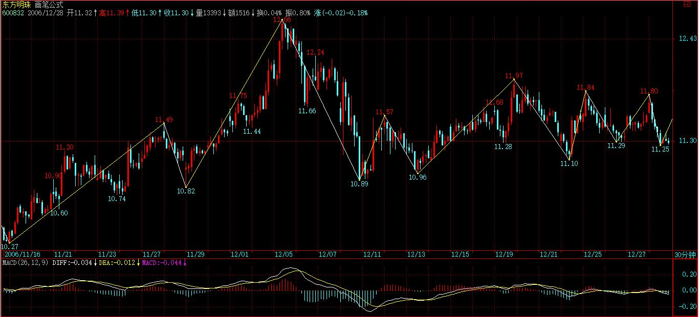
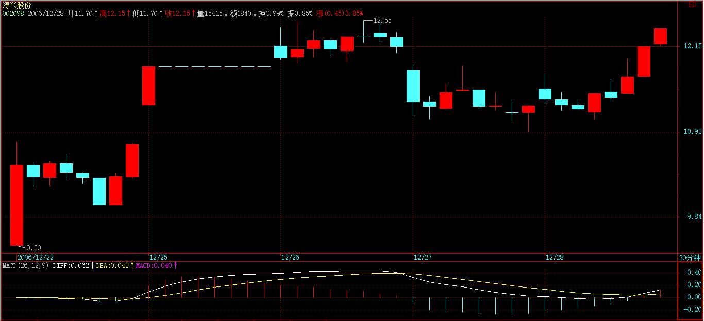
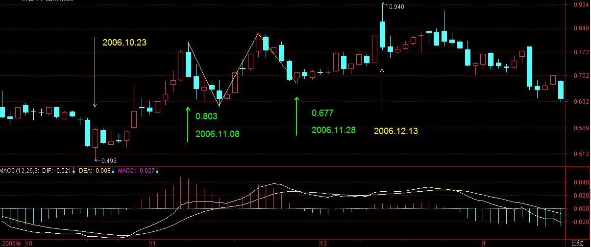
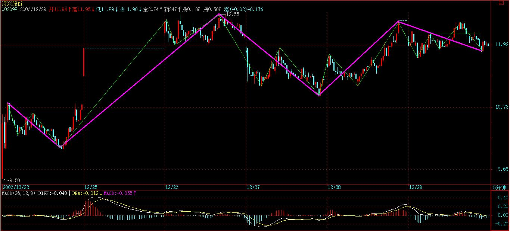
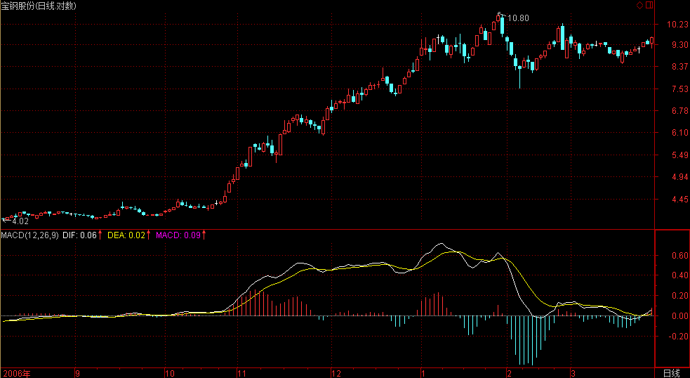

(2006-12-27 15:18:10)
【韶山映山红】原文配图是上证指数日K线图，新浪博客自动更新为当下的新图，这里贴上当时的日K线图。】
本ID看了看各位的问题，发现前面说了那么多，似乎真能看明白的没几个。为什么？很简单，估计来这里的人都没受过太严格的数学训练，如果受过严格的数学训练，本ID现在所说的，简直就是最简单不过的东西。这里的整个推导过程，和几何里的毫无区别，初中学过几何的，都应该能明白。【韶山映山红】形态学是结构函数，所以和几何里的毫无区别。】所以要看明白，最好先把自己的数学神经先活动起来。
有一句不大中听的话，像孔男人之类的文科生，是很难炒什么股票的。别说一般的散户了，就算当庄家，本ID所见过的庄家肯定是全国最多的，有一个很明显的规律，就是文科生当庄家，基本死翘翘。这可不是玩笑话，是直接经验的总结。孔男人之类的文科生最大特点就是脑子缺根筋----数学思维的筋。
其次，请把以前学过的一切技术分析方法先放下，因为本ID这里所说的，和所有曾有的技术分析方法的根本思路都不同。
一般的技术分析方法，或者用各种指标，或者用什么胡诌的波段、波浪，甚至江恩、神经网络等等，其前提都是从一些神秘的先验前提出发。例如波浪理论里的推动浪5波，调整浪三波之类的废话，似是而非，实战中毫无用处，特别对于个股来说，更是没用。至于什么江恩理论，还有什么周期理论、神经网络之类的，都是把一些或然的东西当成必然，理论上头头是道，一用起来就错漏百出。那些支持位、阻力位，通道线、第三浪之类的玩意，只能当庄家制造骗线的好工具。
如果真明白了本ID的理论，就会发现，其他技术分析里所说的现象，都能在本ID的理论中得到解释，而且还可以给出其成立的相应界限。例如，一个股票新上市后直接向下5波后反手就向上5波形成V字型，按波浪理论，就无法得到解释，而用缠中说禅走势中枢的定理，这是很容易解决的问题。那些理论都是把复杂的走势给标准化成某种固定的模式，就如同面首宣称不带套的爱不是爱一样可笑。
对于庄家来说，对一般人所认识的所谓技术分析理论，早就研究得比谁都精通，任何坐过庄的人都知道，技术图形是用来骗人的，越经典的图形越能骗人。
但任何庄家，唯一逃不掉的就是本ID在分析中所说的那些最基本的东西，因为这些东西本质上对于市场是“不患”的，只要是市场中的，必然在其中，庄家也不例外。就像任何的大救星，都逃不掉生老病死。
这里必要强调，技术分析系统在本ID的理论中只是三个独立的系统之一，最基础的是三个独立系统所依据的概率原则所保证的数学上的系统有效性。
但技术分析系统之所以重要，就是因为对于一个完全没有消息的散户来说，这是最公平、最容易得到的信息，技术走势是完全公开的，对于任何人来说，都是第一手，最直接的，这里没有任何的秘密、先后可言。技术分析的伟大之处就在于，利用这些最直接、最公开的资料，就可以得到一种可靠的操作依据。【韶山映山红】可靠的操作依据。★以后研究。】单凭对技术分析的精通与资金管理的合理应用，就完全可以长期有效地战胜市场，对于一般的投资者来说，如果你希望切实参与市场之中，这是一个最稳靠的基础。【韶山映山红】资金管理怎么做？★以后研究。】
本ID觉得，如果你光只是想挣点钱，那么没必要学什么技术分析，在牛市里，买基金就可以了，特别是和指数相关的基金，你就至少能跟上指数的涨幅。
但市场不单单是为挣钱而存在的，市场是一个最好的修炼自己的地方，人类的贪婪、恐惧、愚蠢，哪里最多？资本市场里，每时每刻都在演绎着。在这个大染缸里修炼自己，这才是市场最大的益处。战胜市场，其实就是战胜自己的贪婪、恐惧、愚蠢，本ID的理论只是把市场拔光给各位看，而拔光一个人并不意味着就等于征服一个人，对于市场，其道理是一样的。不干，不可能征服市场。对于市场来说，干就是一切。
技术分析的最终意义不是去预测市场要干什么，而是市场正在干什么，是一种当下的直观。在市场上所有的错误都是离开了这当下的直观，用想象、用情绪来代替。例如现在，还有多少人为工行的上涨而忿忿不平，却不能接受这样一个当下最直观的事实。多次反复强调，牛市第一波涨的就是成分股，工行这最大的成分股不涨，还有谁涨？96年的牛市，最大的成分股就是发展，那时候比这不更厉害多了，工行这又算得了什么？
市场是有规律的，但市场的规律并不是显而易见的，是需要严格的分析才能得到。【韶山映山红】市场规律可以分为两种，一种是因果规律，什么原因导致什么结果。人们一般都喜欢寻找这样的规律，因为可以预测未来。还一种是现象规律，市场的表现形态有什么规律，可以让我们知道当下处于什么状态，完全分类，就可以知道会有哪些演变的可能，就可以去应对。股市的很多技术分析理论都是关于后一种规律的，缠论也是。缠论的伟大在于找到了一个自同构的完全分类的方法。】
更重要的是，市场的规律是一种动态的，在不同级别合力作用下显示出来的规律，企图用些单纯的指标、波段、波浪、分型、周期等等预测、把握，只可能错陋百出。【韶山映山红】缠论的自同构递归系统也完美的诠释了不同级别的合力的作用。】
【韶山映山红】这里是原文第四次用到“分型”这个词汇。无法确定分型与分形的关系。】
但只要把这动态的规律在当下的直观中把握好、应用纯熟，踏准市场的节奏，并不是不可能的。【韶山映山红】用形态学直观地辨识运动状态，用动力学决定操作的节奏，与市场共舞。】
最后布置一个作业：在所谓的波浪理论里，有一个所谓的结论，大概意思是说第四浪的调整一般在第三浪的第四子浪范围内，用缠中说禅走势中枢的相关定理分析该结论成立的范围以及局限性，相应给出类似走势的一个更合理的理论分析与实际操作准则。【韶山映山红】波浪理论要求第四浪不能跌破第一浪的高点，也就是说，一定是一个线段类上涨，不能形成中枢。第四浪的调整不能跌破了第三浪的第四子浪范围，是不是为了间接保证不形成这个中枢？如果是这样，那么，就要考察这个第四子浪的范围是否在第一浪的高点之上，这就是该结论成立的范围。其局限相应的就是这种间接要求不靠谱，符合这一个要求也依然可能跌破第一浪高点。更多内容，要学一下波浪理论。以后研究。】
【网文】缠论、均线理论、波浪理论的结合
(2011-10-17 11:17:15)
本文只是探索，并不是规则和结论，只是一种方法，不是走势实质。真正的精准计算，并俺时间空间定位交易的方法是哲纳。详见博文目录里的“哲纳”或《关于精确定位交易》2012年3月16日备注
【韶山映山红】趋势两个字，有两重含义：趋是方向，势是力度。所以，缠论的趋势，两个中枢是不能有重叠的。否则力度不足。】
大盘没什么可说的，
选股就更没什么可说的，就是成分股，没动的都要动的。这话说了无数遍了，以后不说了。
2006-12-27 15:25
这种大牛市炒股票是最简单的，成分股就那300只，如果觉得那太多，就看上海50，第一轮反复围绕这几十只股票，不断轮炒就完了。【韶山映山红】沪深300。上证50。】而第二轮是炒成长股，那是以后的事情了。关键是消灭一切熊市心态，这话也说过很多次了，以后也不说了。
2006-12-27 15:29
[匿名] iris 2006-12-27 15:28:58
成份股中现在还没动过应该不好找了，我要一个个找找看。缠姐每天都这么准时，真是太佩服了。
=======
谁叫你现在才找？现在找，风险就大多了。一大早就说了，拿着成分股，好好学技术，两头不耽误。
牛市的第一轮是最轻松的，基本不用费脑子挑股票。第二、三轮就要累点了。
不明白的，去看看发展96、97年的走势。
2006-12-27 15:32
[匿名] cc 2006-12-27 15:31:20
mm，第一阶段是不是大盘每次调整都先涨银行地产?
========
成分股，你说联通算什么？
但银行股肯定是有份的，因为权重最大。
2006-12-27 15:33
[匿名] 欲哭无泪 2006-12-27 15:31:05
楼主：请您看看孚日股份．那可是我的全部家当，血汗前哪！现在被套，自杀的份都有了！怎么办哪！能不能破例一次，告诉我咋办呀！谢谢
【韶山映山红】002083孚日股份。】
=======
对次新股，早说过了，上市第一天的高价不放量突破，看都不用看，除非在下面出现第一类的买点。这样的好处就是不用浪费时间。现在该股走成这样，就等吧，反正离箱顶也不远。【韶山映山红】介入次新股的条件：1，放量突破上市第一天的高价。2，没突破但是出现一买。】
再说一次，真正的高手就是顺着市场最简单的方向去，早说过什么呢？一定要紧跟大部队，别和散兵游勇玩，那些人自身都难保，有什么可玩的？牛市第一阶段，大资金都忙着搞成分股，管这些小盘玩意的，都是小玩意。等吧，最终都要涨的。
2006-12-27 15:40
[匿名] 去 2006-12-27 15:30:18
楼主你再多几条筋，也免不了各种生老病死，这也是我对你下的结论。事业也一样的！
===========
生老病死的，是你，但又何曾是你？别自我憋屈了。
2006-12-27 15:44
没事，先下，再见。
2006-12-27 15:44
wy1499 2006-12-27 16:20:50
楼主，1、“缠中说禅走势中枢定理一”：在趋势中，连接两个同级别“缠中说禅走势中枢”的必然是次级别以下级别的走势类型。
我现在觉着，盘整走势与趋势走势的连接是不是可以在盘整中枢结束后，直接跟着趋势的第一个走势中枢，强庄有可能用这种图形来做最后的洗盘，只是我不知道逻辑上该怎么来证明。
====
这个问题以后会说到，关键是前后两个中枢不能有重叠，否则只是构成更大级别的盘整。
2、还有缠中说禅走势中枢定理三中的两个次级别走势的组合只有三种：趋势+盘整，趋势+反趋势，盘整+反趋势。
我觉得这第三种组合不大好理解，走势中枢本身就是一种盘整图形，在后面紧跟着盘整，那还怎么区分出来，这段盘整是否属于前段走势中枢内呢？
再有假设命题正确，盘整之后为什么只有反趋势，就不能出现趋势呢？结束前一个走势中枢，盘整后再继续趋势走势，不是很正常吗？
盼解惑！
=========
趋势+盘整中的趋势中的价值中枢与盘整中的价值中枢的级别是不同的，后者更高。不能单纯地谈论中枢，必须结合级别。
注意谈论这个问题的前提，谈论的是中枢的离开与返回问题。如果以一个次级别的盘整类型离开中枢，返回当然不可能也是盘整类型，否则就构成一个大级别的盘整类型，这就与原中枢维持的前提矛盾了。
对于围绕中枢的运动，离开中枢的趋势是正趋势，返回的是反趋势。
2006-12-27 20:55
[匿名] 空读 2006-12-27 20:43:28
缠禅讲的第一买点和第一卖点都是由背驰形成.走势结束转向的话一定会出现背驰吗?涨势疲软构成背驰,下跌后反弹构成背驰.如果等背驰等不到,下跌以后等反弹,结果会出现大幅亏损被套.背驰的形成应该是这一波走势的涨跌幅度和速度比上一波弱.由此能判定下一步趋势结束吗?背驰之后还有背驰的情况也不少,是不是也有一个成功率,概括市场上的大多数情况.
===
为什么下跌等反弹？出货永远都是在上涨中出的，一旦出现背驰性的上涨，就要出货，当然，这和你操作的级别有关，如果你是长线的，1分钟图上的背驰当然不用考虑。下跌才出货，都是有毛病的行为。
背驰只可能出现一次，怎么可能一次又一次。你认为的一次又一次的，根本就不是本ID所说的背驰，注意，背驰是两个同级别趋势之间对比产生的。先把什么叫背驰搞清楚。
2006-12-27 21:00
[匿名] iris 2006-12-27 18:08:13
我发现我越看越不太明白了，请问禅姐，是不是一个走势中枢中并不是所有k线都要在这个股价范围内。像580991的11.8到11.28日走势中枢中（0.677,0.803），11月15号的k线就没在这个范围，11月17到11月27日的最低价都比0.677高。请缠姐指教。 实在不好意思啊，遇到我这样的新手加笨学生。

========
当然不是所有都在其中，否则怎么会去探讨离开与返回中枢的运动定理？都在其中了，哪里还有什么离开、返回？
2006-12-27 21:02
[匿名] 空读 2006-12-27 20:21:58
本级的盘整形成高一级的走势中枢吧
“缠中说禅走势分解定理一”：任何级别的任何走势，都可以分解成同级别“盘整”、“下跌”与“上涨”三种走势类型的连接。
“缠中说禅技术分析基本原理二”：任何级别任何完成的走势类型，必然包含一个以上的缠中说禅走势中枢。
“缠中说禅走势分解定理二“：任何级别的任何走势类型，都至少由三段以上次级别走势类型构成。
说个极端的情况:有的股一字涨停封盘上涨,日线成上天梯状,如果某一天由一前一天的一字涨停改为一字跌停,日线图下天梯,st和pt类股票的走势比较多,这种上涨下跌的走势就无法分解成次级别的三段走势了,也没有走势中枢吧
===
当然有，最低级别的中枢是怎么定义的？不记得了？一字线构成的就是最低级别的价值中枢。先把中枢的定义搞清楚。【韶山映山红】中枢不是级别越高越好。级别高只表示走势更复杂，可能跨越的区间范围更大，需要在更大范围考察。级别越低的走势类型意味着力度越大，像单边走势，像连续的一字板。】
2006-12-27 21:05
[匿名] 空读 2006-12-27 21:04:39
级别是如何划分的?两个级别之间差是多少,月线与周线差4倍,周线与日线差5倍,日线与60分钟线差4倍,日线与30分钟钱差8倍,日线的下一级应该以哪一种为准?再下一级是多少?
======
一般用5分钟、30分钟、日线、周线、月线就足够。【韶山映山红】这些是最常用的K线图级别，所以借用这些K线图，属于方便样本。缠论后期都是从1分钟起步。】实际上，月线并不基于周线，而是和周线一样基于日线。】
股票的走势:不上就下,要么盘整。上与盘整与下之间的分界是什么,上涨的幅度高出盘整区间多少算是上涨,下跌幅度超出盘整区间多少算下跌,在1秒的分时线上好确定。同一价格是横盘盘整,涨一分算上,跌一分算下,到看1分钟以上走势里上涨和盘整的趋势在走出来之前难以确定啊,突破盘整区域又返回。三角形整理的也总分不清。总还是不确定当前的状态是什么,是趋势还是盘整。
======
根本连什么叫上涨、下跌都没搞清楚，先把前面相关的定义复习一下。
2006-12-27 21:12
[匿名] 狐 2006-12-27 20:25:37
缠女，请教个问题，你说美国的强大是干出来的，不是道德出来的。
我,A兄,B兄3人是好朋友，A兄和女友分手了，B兄马上和A兄女友走在了一起，B兄是否有道德，那么我们有必要从另外个角度去分析B兄是对的么？
===
首先别把任何人当成自己的私有财产，人连自己都从来未曾拥有，还能拥有什么？把这个前提拿掉，一切问题都成了假问题。【韶山映山红】因为女友不是Ａ的私人财产，所以Ｂ就没有道德不道德的问题，“一切问题都成了假问题”。不道德的是“我”这样视女友为私人财产的人。】
2006-12-27 21:16
[匿名] 花蝴蝶 2006-12-27 21:13:33
有问题请教缠姐：
缠中说禅走势中枢：某级别走势类型中，被至少三个连续次级别走势类型所重叠的部分
1 是三个连续次级别中的走势类型，还是次级别中连续三个走势类型？
2 能把重叠说得形象一点吗？
我比较愚顿，理解起来很困难。希望缠姐能耐心赐教。万分感谢！！！
===
看18里的公式，最精确的数学公式了，一看就明白。【韶山映山红】中枢区间的数学表达式。】
“连续次级别”是什么意思？中文有这样的表达吗？
三个/连续/次级别走势类型
2006-12-27 21:19
太晚了，先下，再见。
2006-12-27 21:23
(2006-12-28 15:30:28)
我是谁？
从哪里来？
到哪里去？
人类的理性只不过是一系列脑电波的游戏，而这系列游戏里有一个不是问题的问题：“我是谁？从哪里来？到哪里去？”，这个问题据说是没有标准答案的问题，而实际上，除了科举以及科举式的生存，又有什么是需要标准答案的？
但这个问题并不是一个很重要的问题，更为重要的问题是：“问问题的是谁？”这个问题可以无穷地追问下去，例如“问问问题的是谁的是谁”、“问问问问题的是谁的是谁的是谁”等等，这有点象战国时那姓周的漆圆小吏和蝴蝶玩的游戏，据说这个游戏和梦有关。
【韶山映山红】漆园吏，指庄子，战国时期道家学派主要代表人物。典出《史记》卷六十三《老子列传》附《庄周传》。“庄子者，蒙人也，名周。周尝为蒙漆园吏，与梁惠王、齐宣王同时。其学无所不窥，然其要本归于老子之言。故其著书十余万言，大抵率寓言也。作渔父、盗蹠、胠箧，以诋訾孔子之徒，以明老子之术。畏累虚、亢桑子之属，皆空语无事实。然善属书离辞，指事类情，用剽剥儒、墨，虽当世宿学不能自解免也。其言洸洋自恣以适己，故自王公大人不能器之。”
【韶山映山红】庄周梦蝶，典出《庄子·齐物论》，是庄子所提出的一个的哲学命题。“昔者庄周梦为胡蝶，栩栩然胡蝶也，自喻适志与，不知周也。俄然觉，则蘧蘧然周也。不知周之梦为胡蝶与，胡蝶之梦为周与？周与胡蝶，则必有分矣。此之谓物化。”】
苏东坡说：“人生如梦”，当然这个比喻只是苏大人从《金刚经》那里偷来的。
【韶山映山红】苏轼《念奴娇·赤壁怀古》大江东去，浪淘尽，千古风流人物。故垒西边，人道是，三国周郎赤壁。乱石穿空，惊涛拍岸，卷起千堆雪。江山如画，一时多少豪杰。遥想公瑾当年，小乔初嫁了，雄姿英发。羽扇纶巾，谈笑间，樯橹灰飞烟灭。故国神游，多情应笑我，早生华发。人生如梦，一尊还酹江月。】
【韶山映山红】苏轼《西江月》世事一场大梦，人生几度秋凉。夜来风叶已鸣廊。看取眉头鬓上。酒贱常愁客少，月明多被云妨。中秋谁与共孤光。把盏凄然北望。】
【韶山映山红】苏轼《西江月·平山堂》三过平山堂下，半生弹指声中。十年不见老仙翁。壁上龙蛇飞动。欲吊文章太守，仍歌杨柳春风。休言万事转头空。未转头时皆梦。】
【韶山映山红】苏轼《永遇乐》彭城夜宿燕子楼，梦盼盼，因作此词。 明月如霜，好风如水，清景无限。曲港跳鱼，圆荷泻露，寂寞无人见。紞如三鼓，铿然一叶，黯黯梦云惊断。夜茫茫，重寻无处，觉来小园行遍。天涯倦客，山中归路，望断故园心眼。燕子楼空，佳人何在，空锁楼中燕。古今如梦，何曾梦觉，但有旧欢新怨。异时对，黄楼夜景，为余浩叹。】
“我是谁？从哪里来？到哪里去？”、“问问问题的是谁的是谁”、“问问问问题的是谁的是谁的是谁”等等，都如同梦魇一般。但不管是梦魇还是白日梦，都只不过是脑电波的游戏，哪有什么梦呀。
【韶山映山红】我是谁？我从哪里来？我要到哪里去？这是被称为哲学史上三大终极之问的古老哲学命题。】
那么，无梦无想时主人是谁？神经病、植物人都不是无梦无想的，而就算真的有人能无梦无想了，脑电波完全停止了，生理过程完全停顿了，而不死，还不是一个旷世的无明大梦？
真正的你又何曾生死，生死又与你何干？。“我是谁？从哪里来？到哪里去？”、“问问问题的是谁的是谁”、“问问问问题的是谁的是谁的是谁”的脑电波又与你何干？你与你又有何干？乾坤宇宙只不过是你心中的一颗灰尘，又何必自寻烦恼？而你的心究竟又是哪个心？
你有明珠一颗，久被尘劳关锁。今朝尘尽光生，照破山河万朵，不要被名句障眼了。什么劳什子的明珠，死去！
成分股的威力，各位会继续看到的。有人说现在涨的很离谱，本ID怎么一点感觉都没有？比起96年那次，差远了。比起91年甚至93年那次，更差远。年94年8、9月那次的反弹，从指数的速度上也比这次快。没什么可说的，只不过以前的龙头叫发展、长虹。现在换成了工行之类的，一点新意都没有。
本ID已经不想说第一波是成分股这种话了，说得太多，没意思了。如果要和96年比，见4500点前就不该有大的调整。明年、最迟后年怎么都应该见6000点。否则，本ID简直对这次的行情失望之极。【韶山映山红】缠师第一次提到要上6000点。】
元旦后，以及特别在人寿上市前后出现平台式快速震荡是必要的。这是短线最大的风险，至于中长线，又是一句说过无数次的话，现在才是牛市的第一阶段。【韶山映山红】601628中国人寿，2007.01.09上市。“平台式快速震荡”,为什么“元旦后，以及特别在人寿上市前后”那个时候会出现？★以后研究。】
2006-12-28 15:45
[匿名] lazycat588 2006-12-28 15:36:05
顶。刚买580992就赶上跳水，郁闷到刚回过头就被人占了沙发，继续郁闷！
【韶山映山红】580992雅戈QCP1。】
===
权证在大休息前都要跳水的，这么明显的规律，早就应该知道。
股市不能瞎搞，必须要当有心人。
过完节吧，会好起来的。
2006-12-28 15:47
[匿名] 白纸 2006-12-28 15:37:44
缠mm，“缠中说禅走势中枢”定理中的“次级别以下”是否包括次级别在内？谢谢？
很高兴又有新文章！
===
当然包括
注意
中枢和盘整不是一回事情。当然，因为盘整只有一个中枢，所以很容易搞混。
2006-12-28 15:49
[匿名] 白纸 2006-12-28 15:48:40
缠mm，现在买成分股是不是太晚了？我瞎忙了两个月还是没什么收获！“教你炒股票”系列又还没入门
=========
本ID很久以前已经反复强调这个问题了，回去看看000001 96年的走势。
【韶山映山红】000001深发展A。2012.08.02变更为平安银行。】

各位，注意这样的节奏。最大那50只肯定要先上一个台阶后，然后300只里面的后250只就会补涨上去，这个节奏是可以把握的。
至于三线股，就是更后面补涨了。
牛市其实是最简单的，每一阶段有一个龙头板块，其他都是补涨的。
第一阶段的龙头板块就是成分股。
第二阶段是成长股，那是以后的事情了。
第三阶段是重组股，那是最后的晚餐了。N年以后会出现
现在才是牛市的开始，没赚到钱也不怕，后面明确方向，机会多得你跟不过来。
2006-12-28 15:56
[匿名] 心禅 2006-12-28 15:44:44
“禅主”，下午好，今天的大盘真的除了你说的上让50里蓝筹股在疯涨，其余都跌！这两天都是看、学习、理解最近两篇文章，还不是全部理解，能否再举一个实例说明？
另外，实在忍不住，想问“禅主”，我在600779水井里好久了，受伤不轻，看其30分钟图，是不是已形成三个连续走势，出现中枢了？下面应该是上涨了吧？
====
跌的会补涨的，但和龙头依然没法比。这就是为什么牛市中一定要拿每个阶段的龙头。
2006-12-28 15:58
小明 2006-12-28 15:47:27
我在上个帖子里的问题移过来：为了更好的理解，请缠mm以中国联通的30分钟K线为例来解释一下吧。从12.7日11：30开始到12.26日15：00结束，这段时间是不是构成该级别上的一个完整的盘整，也就是你说的中枢概念？然后在12.27日10：30分出现第一类买点，第二类买点截至我发帖为止还没有出现不过也快了。不知道我说的对不对？【韶山映山红】此人完全没搞懂一买是什么。】
======
不对，30分钟的第一类买点在8月的时候。现在要找第一类买点，只能在1分钟图上找了。
另，我今天买入601333，缠mm能不能说说后市如何？【韶山映山红】601333广深铁路，2006.12.22上市。】
=======
这股票本ID也有，不过是前两天买的。

本ID对预测走势没有兴趣。本ID唯一会干的事情就是等卖出信号的发出。
2006-12-28 16:05
[匿名] aa 2006-12-28 15:36:45
我感觉东方明珠在30分钟上形成了11.53--10.97的中枢。现正在中枢内运行。不知对不对，讨论一下【韶山映山红】600832东方明珠。当年的600832东方明珠2015.04.29最后交易日后退市。现在的600637东方明珠是2015.06.19改的这个名。】

================
[匿名] 学习 2006-12-28 15:52:51
什么劳什子的
==============
注意这样一个问题，中枢是以前三个次级别运动为准的，后面的是走势类型的延伸，在盘整的走势类型延伸中，其运动方式就是围绕这中枢的运动。请把这个问题搞清楚再往下分析。【韶山映山红】不能形成新的同级别中枢的运动，就是“围绕这中枢的运动”。换句话说，只要不是中枢移动，就都是。】
请继续分析。
2006-12-28 16:12
[匿名] 白纸 2006-12-28 16:13:02
另，我今天买入601333，缠mm能不能说说后市如何？
========
缠中说禅
这股票本ID也有，不过是前两天买的。本ID对预测走势没有兴趣。本ID唯一会干的事情就是等卖出信号的发出。
-----------------
按照缠mm所说的这只股票应该是昨天才突破首日最高价呀！
======
资金量不同，操作的时间也不同，如果本ID这么大资金也按突破后介入，这样别人就会害本ID，本ID就要被迫当庄家了。本ID对当庄家没兴趣。
当然，本ID不是对所有新股都会在开盘后的第二天介入的，现在是超级大盘股的天下，便宜筹码不能让别人抢了，否则会影响行业地位的。
但对于散户来说，突破以后再跟进是有好处的，这样，你资金的利用率会高多了。

2006-12-28 16:24
小明 2006-12-28 15:47:27
我在上个帖子里的问题移过来： 为了更好的理解，请缠mm以中国联通的30分钟K线为例来解释一下吧。 从12.7日11：30开始到12.26日15：00结束，这段时间是不是构成该级别上的一个完整的盘整，也就是你说的中枢概念？ 然后在12.27日10：30分出现第一类买点，第二类买点截至我发帖为止还没有出现不过也快了。 不知道我说的对不对？
==========
缠中说禅
不对，30分钟的第一类买点在8月的时候。现在要找第一类买点，只能在1分钟图上找了。
------------
iris 2006-12-28 16:20:52
缠姐说的第一买点应该是在8月8号吧，在日线上可以看出，对不对阿缠姐？请问禅姐，怎么把握第一卖点阿？
==========
把买点的情况反过来就可以了，两段相邻的同级别上涨趋势发生背驰。
2006-12-28 16:28
[匿名] 心禅 2006-12-28 16:26:47
"注意这样一个问题，中枢是以前三个次级别运动为准的，后面的是走势类型的延伸，在盘整的走势类型延伸中，其运动方式就是围绕这中枢的运动。"
“禅主”，从以上理解，是不是中枢后，走势继续延伸，就是盘整？但这种围绕中枢的盘整运动以什么信号标志结束呢？以前你说过盘整后的转折是关键
===
带有一个中枢的走势类型就是盘整，但盘整可以不断延续下去，不断围绕中枢运动，这叫盘整的延伸。
同样，趋势也可以延伸，好好研究17、18，里面都有。
2006-12-28 16:33
[匿名] 学习 2006-12-28 16:30:14
600832的30分钟中枢是不是与5分钟的走势重叠后，再看5分钟的前三段，那么中枢区间应该是11.40---11.13之间，这样理解对吗？30分钟里我指的是12.11日到12月19日的区间。 【韶山映山红】600832东方明珠。当年的600832东方明珠2015.04.29最后交易日后退市。现在的600637东方明珠是2015.06.19改的这个名。】
===
走势只有一个，走势图可以有很多，按30分钟看就是30分钟图，按日线看就是日线图，但走势只有一个，由不断的交易构成。重叠的只能是前后不同的走势，30分钟和5分钟不存在重叠的问题。
你能说5分钟图上某三段走势发生重叠，但你不能说5分钟的和30分钟的重叠。
2006-12-28 16:37
[匿名] 小溪 2006-12-28 16:27:02
缠JJ好!在一张走势图(如日K线走势图)里,走势也有不同级别是吗?
========
[匿名] 白纸 2006-12-28 16:31:15
当然有分不同的级别。缠mm前面有讲的。
=========
这个理解是对的，但要精细点。
走势是分级别的，但在某张，例如30分钟的走势图上，日线级别可以就显示出30分钟走势的连接，而1分钟级别的一些东西，在30分钟图上就看不出来了。
看越大级别的图，其实就是把低级别的一些信息给过滤了。【韶山映山红】这种过滤效应使得我们无从辨别是否具备足够的低级别走势的递归。】
2006-12-28 16:40
小明 2006-12-28 16:34:32
综合上面缠mm的分析，看来俺今天买入601333是买对了。呵呵。
现在不是大盘股的天下吗？那我选股的理由很简单，就是看哪家成交额大我就选哪家。最后我选了三个沪市成交前三甲的：工商银行，中国联通，601333。最后反复权衡选了最后一个。毕竟是新股吗，没有涨幅。而且现在进去就和庄家差不多的成本了。哈哈。不过，会不会马上来个洗盘呢？
=========
按什么方法都有对的时候，但必须明确其有效范围。
如果散户都喜欢这种方法，庄家最高兴了。【韶山映山红】庄家高兴的是抢新股的行为？还是“看哪家成交额大我就选哪家”？★】
2006-12-28 16:48
先下了，晚上再说，再见。
2006-12-28 16:50
[匿名] 戈石 2006-12-27 21:25:13
尊敬的楼主：
天天在认真学习中，主要的收获：第一买点，实战中有收获。特别想学习楼主的缠中说禅走势中枢理论，她是看图时的核心问题，十七讲时觉得自己懂了，十八讲师问题就来了：某级别走势类型中，缠中说禅走势中枢时直观的，不需要看次级别的图就能看出来，既有三段重叠就行，“注意，次级别的前三个走势类型都是完成的才构成该级别的缠中说禅走势中枢”，为什么要强调“完成的走势类型”，如果三段中有一段在次级别中不是完成的走势，那他在本级别重叠的三段就不能构成缠中说禅走势中枢？盼盼盼！！！
===
不完成的怎么知道要演化成什么类型的？例如，出现第三个，那前两个肯定完成了，否则也没有第三个出现。但如果这第三个不完成，例如在30分钟的级别里，出现一个最低级别的缺口，直接就跳到前两个类型之外去。那根本就不能构成重叠了，中枢只能在其后的走势中形成。【韶山映山红】这里并没有强调走势类型的完整性，只表明已经走完了，目的只是确认走势类型可以被辨别。】
一个最极端的例子，一个股票连续30天一开盘就涨停，30条横线向上，这样，在日线上就不可能形成中枢，最多只在1分钟图上形成30个中枢。而1分钟不是日线的次级别。日线的中枢，只能在打开涨停后并且在30分钟图上形成三段完成的走势类型后形成。
2006-12-28 20:29
[匿名] x股 2006-12-28 18:55:34
博主，有疑问，请指教：日线图上，日K线单体所形成的曲线，是日线级别的次级别走势吗，也就是用日K线曲线形成的中枢来判断日线级别的走势？【韶山映山红】此人所说的可能是分时走势图。】对于级别总是感觉比较难把握，可能是我图看太少的缘故吧，没图感。还有对于一个走势的终结，是不是按照是否产生新的同方向上的中枢来判断的？那是否就是说一个走势的端部存在着一个中枢？而其实一个走势的起止并不一定是通过价格来划定的，而一定可以通过中枢来划定，是不是这样？
===
日线的几根K线不可能形成什么日线中枢，日线中枢只能到30分钟图上出现三段完成的有重叠的走势类型中找。形成一个日线中枢，怎么都至少需要10来根日K线。【韶山映山红】很多人说缠论早期的中枢是笔中枢。一个笔中枢的三段确实需要13根以上的K线。但是笔是有严格的定义和判断的。下图是缠师提出中枢概念之后钦点的580991海尔JTP1权证的中枢案例，以日线笔中枢的角度看，第一笔就不符合要求，就连新笔要求都不够。可见缠论早期的中枢顶多是接近笔中枢，而不能就说是。】

如果一个上涨，连5日线都不破，肯定是形成不了日线中枢的，最多形成30分钟的中枢。所以这就是强势的表现。【韶山映山红】可以参考上图中枢和5日线的关系。】
【韶山映山红】不能上穿5日线的上涨走势应该是很弱的反弹，不是“强势的表现”，所以这里说的应该是上涨走势的调整不跌破5日线的情况。一个只有5分钟中枢的上涨当然强势。】
【韶山映山红】这句话背后的逻辑是什么？这个说法是否能够推广？比如说，30分钟图上，如果一个上涨连MA5均线都不破，肯定是形成不了30分钟中枢的，最多形成5分钟的中枢。以后研究。】
2006-12-28 20:34
[匿名] 无言 2006-12-28 20:31:52
缠姐,今天本想抢张沙发,你却那么迟发帖.确实我是理解了你的趋势和背弛的,从002069开始,今天又在30分钟线发现了002098的第二类买点,
【韶山映山红】002098浔兴股份。2006.12.22上市。】

11.32进,又是一个板.
我前几天的帖,你都不回答.有时侯明白了的东西,我都说不出来,也说不好.王义夫比赛的时候都看不清靶心,全凭平时训练出来的感觉.我觉得没必要在这里拖这么久,把定律都说出来,让大家在实战中练,才能转化为自己的东西.
===
这里每个人的水平不同，你看现在还有很多人连最基本的都没搞清楚。快了消化不了有什么用？
2006-12-28 20:35
[匿名] 插班生 2006-12-28 16:45:30
反复研究中枢概念, 三个连续次级别类型, 看来可以是连续三跟下跌线构成,也可以是连续三跟上涨线构成. 对吗? 在趋势中, 中枢数值越小,走势越强,缺口是最强的.是吗? 看来我要走火入魔了.
====
怎么可能是连续三个下跌？下跌+下跌还是 下跌，只能算一个走势类型。
中枢停留的级别越小，趋势的力度越大，【韶山映山红】什么是“中枢停留的级别”？就是中枢所在的走势最终完美的时候中枢所在的级别。中枢的级别就是趋势的级别。】级别和力度的关联，是相对的，是有参照物的，两个相同效果的趋势相比，中枢的级别越小，趋势的力度越大。】
缺口不等于中枢，只是连接中枢的最低级别。缺口表明离开原来中枢的力量比较大，但如果缺口以后出现一个很大级别的中枢，这就证明其力度有限了。【韶山映山红】停留的级别很大的中枢，意味着当下哪个方向的力度都很小。但这只是当下的判断，不能预测未来。】
最强的当然就是缺口后一个5分钟甚至更短的中枢后就继续趋势，这是最强的。例如，连续直接封涨停是最强的。为什么？因为缺口后的中枢都是1分钟，最低级别的。【韶山映山红】换句话说，如果这种连续一字板走势之后的中枢级别很大，意味着将有长期大幅度的调整？还是长时间将无力上攻？以后研究。】
本ID理论可以解释各种现象，各位自己也可以开动脑筋，明白了，很多现象都可以自己去解释，这样才能对理论有更深的认识。
2006-12-28 20:42
[匿名] 在路上 2006-12-28 16:46:05
请问缠姐601333广深铁路在5分钟图上，上市到最低价5.9形成下跌趋势，5.9至12月27日10点10分形成盘整,盘整的中枢是6.3至6.12,而后是上涨，形成下跌+盘整+上涨。不知分析的是否正确？请指教。【韶山映山红】601333广深铁路。】
===
不错，但用1分钟图看更清楚。
【韶山映山红】按照笔线段初始化的划分，只是一个线段类盘整向下＋线段类盘整向上。】
【韶山映山红】标准化处理以后。】
【韶山映山红】线段类盘整向上的回踩走势，更低级别的盘整向下。】

不过，由于新股，有一个更实用的方法。就是把上市前看成一种上涨，开盘到低点的回试看成一个上涨中的30分钟中枢，昨天突破到今天的盘整开始形成第二个中枢。【韶山映山红】前面的分析正确，后面的分析更实用。意思是说，中枢和走势的划分虽然有正确与否，但没有标准答案，可以根据需要去选择。】
这个中枢的时间有点短，次级别的三个走势还没完全走出来，从纯技术上，还有从这里直接回头，也就是假突破的风险，所以还要等时间来确认中枢形成，相应就是确认突破的有效性。一旦确认，升势的延续就确认了。【韶山映山红】这里有3种走势的可能：1，下跌回第一个中枢，中枢升级。2、下跌不回第一个中枢，形成现在的中枢，然后继续向上。3，不下跌，直接上行，不完成现在的中枢。按后面的课程，这里已经形成了笔中枢，还没有线段中枢。】
2006-12-28 21:13
[匿名] 悠悠悠哉 2006-12-28 20:42:37
活在当下
给你加个横批
===
难道还有不是当下的活？还要那劳什子的当下干什么？
2006-12-28 21:14
[匿名] 想飞 2006-12-28 21:07:43
“注意中枢和盘整不是一回事情。当然，因为盘整只有一个中枢，所以很容易搞混。”LZ，能否细说其中的区别，
还有，判断本级别的其次走势中枢是否形成一定要看其次级别的走势，是吗
===
本级别的中枢看是否三个连续次级别的走势类型产生重叠。
中枢与盘整的区别，自己看各自的定义就明白了。
2006-12-28 21:16
[匿名] 在路上 2006-12-28 16:46:05
请问缠姐601333在5分钟图上上市到最低价5.9形成下跌趋势,5.9至12月27日10点10分形成盘整,盘整的中枢是6.3至6.12,而后是上涨.形成下跌+盘整+上涨,不知分析的是否正确?请指教.

============
[匿名] 在路上 2006-12-28 21:15:30
601333在5分钟图中最高点7.32到现在只有一个中枢,区间是7.14至7.06,现在还在围绕中枢运动?
请缠姐指教
============
回答在上面了
2006-12-28 21:17
[匿名] 水蒸气 2006-12-28 20:53:21
缠姐姐,明天我也买点601333
===========
这个位置，首先确认不是假突破再说吧。具体的分析看上面。
2006-12-28 21:19
插班生 2006-12-27 15:36:32
比如日线上580991从10月27日到现在只有一个走势中枢，就是从11月8日到11月28日，而这个中枢就可以看成是11月8日到11月10日，11月10日到11月15日，11月15日到11月24日，11月24日到11月28这四个连续时间段所形成的次级别走势类型重叠所形成。
========
[匿名] 天地e心 2006-12-28 00:28:34
请教问题,580991从10月27日到现在只有一个走势中枢，就是从11月8日到11月28日，为什么不是从10月27日到11月21日?
当然也可以了 你只不过这样就是放大了走势中枢的重叠部分而已 从0.803到0.686 放大到了0.803到0.617 但是在日线上只有一个走势中枢的事实并没有改变。
=============================
[匿名] 小强 2006-12-28 21:18:59
请问缠mm，这家伙说的对么？【韶山映山红】上面的乱七八糟的不要看。】
====
回升、或上涨中的中枢从回落的高点算起。下落或下跌形成的中枢从回升的低点算起。
中枢有点像钟摆，回升的高点，就像把钟摆拉高，然后放手，去回去三次确认。【韶山映山红】三次，确认中枢成立。本质上，是在确认什么？★可以做个专题，以后研究。】

2006-12-28 21:30
[匿名] 想飞 2006-12-28 21:29:59
LZ，刚才可能没说清楚，我的意思是，判断日线的走势中枢是否一定要看30分钟图的相应走势。
===
一般都这样，【韶山映山红】判断日线的走势中枢，一般要看30分钟图的相应走势。】但如果你熟练了，大概知道日线上那若干K线的组合，在30分钟线上肯定会有三段以上的走势类型，也可以不看30分钟。【韶山映山红】也就是说，不是简单地在日线上找笔中枢。要能够通过日K线组合推测30分钟走势。那么，都有什么样的规律呢？★以后研究。如果老老实实做递归，就可以先不去管这些。】
2006-12-28 21:32
太晚了，下了，再见。
2006-12-28 21:33
[匿名] 一样一样 2006-12-28 21:20:25
缠姐,上来晚了点不好意思,请问比如000897津滨发展这种典型的上升三角型的走势应该怎么用您的理论来判断呢?它的卖点又应该在什么地方和情况下呢?请指点密津.
====
临走回答一下，看次级别的图。
中枢形成后的走势不一定要超越中枢的范围，例如收敛三角形的走势，就一定一直在中枢的范围内，这有点像空间的压缩，所以三角形的突破都比较迅猛，但回抽与骗线也较多，在波浪理论中更把他当成第四浪的主要形态，其理论的依据都在这里。【韶山映山红】收敛三角形的走势，像空间的压缩，突破比较迅猛。骗线较多。】
中枢形成后形成压缩性走势，意味着多空力量的平衡与强硬，即使突破后，反方向的压力也回很大，很容易就构成最后一段的走势。但这最后的走势往往特别疯狂，在期货中更是这样。【韶山映山红】中枢的形态。可以做一个专题。以后研究。】
再见。
2006-12-28 21:42
(2006-12-29 15:05:47)
股市休五天，本ID也要外出腐败五天，博客只能跟着休市，各位也要好好休息、明年才能继续闹腾！本ID赶飞机去也。
元旦快乐
有问题请先扔在回帖里，本ID腐败回来再回答。
都去腐败去吧，再见！
2006-12-29 15:10
[匿名] 空读 2006-12-30 03:28:21
学而时习之,各位看我找的600050联通30分钟线上12.28. 11:30与12.07. 15:00相比是不是刚出现一个背驰啊,这回是同级别同向的两个趋势了,是不是到第一卖点了.
【韶山映山红】600050中国联通。】
[匿名] 空读 2006-12-30 03:37:29
601398工行30分钟线上12.28. 11:30与12.26. 11:00相比是否形成背驰?
【韶山映山红】601398工商银行。】

===
都是小级别的背弛，最多就是5分钟图上的。
【韶山映山红】601398工商银行。5分钟图。】
注意，以前说过了，要用MACD看背弛，关键首先要回抽0轴。【韶山映山红】用MACD看背弛，两片同色柱子比较的是次级别，两个同向黄白线比较的才是本级别。】
关于背弛的问题，以后还会说的。等着吧。
2007-1-3 20:23
[匿名] 摄影之友 2006-12-30 23:28:55
博主: 虽然新年将至,仍不敢停滞.文科出身的我,笨鸟先飞吧.今天将11-19课打印出来.慢慢看.
问题与理解:2006.12.20日开始持有000999.理由如下:
结论:持有!
博主,我的理解对吗.谢谢!~~~
===
即使是持有，如果你的短线技术还可以，可以按照中枢上下弄点短差的，这样资金会灵活点。当然，技术不行就算了。
2007-1-3 20:25
[匿名] 降龙 2006-12-30 19:55:32
对LZ的理论略懂一二，还有一个问题：上涨过程中短暂回调（一到三天）后继续上涨创新高，这算一个走势中枢吗？谢谢急盼回复！
－－－－－－－－－－－
[匿名] 笨笨猪 2006-12-30 23:56:25
这要看回调的力度，至少要突破5日线才算一个回调，否则就是个飞吻，那不算是一个真正的调整，也不能算一个中枢
===
什么叫这是一个走势中枢吗？关键是级别，任何一个回调必然在某级别产生中枢，不谈级别光谈中枢没有任何意义。【韶山映山红】任何一个回调，都可以是某级别的向下走势，也就必然在某级别产生中枢。】
2007-1-3 20:26
[匿名] 无言 2006-12-31 15:04:49
缠姐,你好!新年快乐! 我在实战中有几个问题:
一,日线的次级别为30分钟,30分钟的次级别为5分钟,对吗?
二,如果庄家在涨停板位置出货或减仓当时能不能判断出来?如我买的002098,28号涨停,29号低开,我就在12.16出掉了.幸亏现在是牛市,还有盘中冲高可以走人.
【韶山映山红】002098浔兴股份。】
我看了有色的几个股,在上半年都有前一天涨停,隔天低开,从此行成头部的现象.这两天的600483也是.
【韶山映山红】600483福建南纺。5分钟图。】

象这种情况在涨停的那天,用缠中说蝉定律也看不出卖点,一定要在第二天低开就坚决出来吗?
三,我做股票,对成交量是非常看重的,它是我判断背弛的一个重要方面,以后股指期货出来不知有无这方面的数据?如果严格按照技术要求,做期货的胜算不知有多少?谢谢!
===
第一个问题可以这样理解。【韶山映山红】日线的次级别为30分钟,30分钟的次级别为5分钟,可以这样理解。】
关于002098。你好好研究一下5分钟图，就知道为什么会出现这种情况了。【韶山映山红】之前2006.12.25涨停，2006.12.26涨停之上高位盘整，2006.12.27跌破涨停低位盘整。2006.12.28继续盘整然后尾盘拉涨停。2006.12.29低开然后涨停位置之下盘整。“为什么会出现这种情况”？以后研究。】本ID的理论，适合任何情况，关键是你是否把握了。
【韶山映山红】002098浔兴股份。】

成交量不是这样看的，以后会说到。【韶山映山红】回答“我做股票,对成交量是非常看重的,它是我判断背弛的一个重要方面,”。】
2007-1-3 20:32
[匿名] 老无用 2007-01-01 23:31:34
楼主新年好！技术没学好没法腐败啊。
600497的日线图反复研究，两段下跌趋势和顺势平台盘整算是看明白了，但百看不得其解的是看不懂为什么是在2005年7月27日出现第一类买点，静态图应是05年6月6日完成第二段下跌呀，而且按照背驰定义，短期均线5日线和长期均线10日线构成的面积由于两段下跌途中均出现多次缠绕，不知如何比较其大小，从而无法判断背驰。7月27日就更不知如何发现背驰了。本人愚钝，诚盼楼主指教。
【韶山映山红】600497驰宏锌锗】
======
且不说其他判断方法，就算用最简单MACD，6月6日时，MACD的黄白线还创新低，就不可能背弛了，【韶山映山红】这里是下盘下的结构，盘整把黄白线拉回０轴了，第一个下一般都不会把黄白线拉得很低，第二个下就很容易黄白线创新低。但是这里如果不是最后的那一下急跌，应该可以看做是下盘下的盘背，而且之后的反弹也涨破盘整了。只不过，这个下盘下结构被看做是一个走势，和反弹同级别了。★可以做个专题，以后研究。】而7月27日是回抽0轴，然后价格创出8.14元新低而MACD都没有，这就是典型的背弛了。【韶山映山红】感觉这样的黄金坑似的背驰陷阱不常见。】
当然，现在各位只要表明如何用MACD看背弛就可以，更精确的分析，还需要学多点东西才能明白，以后都会说到的，请继续努力。
2007-1-3 20:41
[匿名] 盼望 2007-01-03 20:39:02
尊楼主：您终于回来了！我持有的000423阿胶.停牌整一月了.大盘涨了都1000多点,心里快急死了,但是一点消息都没有,怎么办呀!恳请赐教!
=============
现在停牌好，特别对抓不住股票的人，停牌一开盘就涨50%，如果不停牌，很多人涨个10%就跑了。停牌是好事，等着，牛市还长着。
【韶山映山红】000423东阿阿胶。】
2007-1-3 20:43
[匿名] nn 2007-01-03 20:36:59
楼主晚上好!终于腐败回来了,明天继续论语还是股票?先谢啦!五天完得开心吗?一家人尽想天伦之乐,是吗?
===
明天先说论语吧，明天是一个很重要的章节，给点面子孔二爷吧。后天说股票，给出一个第三类买卖点的判断方法，对现在特别有意义。
给大家一个游戏，猜猜工行的日线上第三类买点是那一天的。
2007-1-3 20:46
[匿名] 楼主好人 2007-01-03 20:45:01
楼主真是好人，说道做到，俺虽然没有问问题，但也被楼主的精神感动，希望楼主继续办好此博，谢啦！
===========
下午才到北京，回来发现冰天雪地的，挺好，北京今冬第一场雪。
2007-1-3 20:48
[匿名] whq999 2007-01-02 09:02:49
580991 30分钟级别里10月23日到11月8日的那一段为什么不能参与构成中枢?LZ能不能就这一段给出具体分析?谢谢了!
【韶山映山红】580991海尔JTP1。】
所谓中枢也是对应每个级别的图形的,那一段对于5分钟k线来说可能算是构成中枢,但对于日k线来说就不算了.日k线的中枢该是0.556----0.990之间,现在并没突破,依然算盘整.
===
能不能不是本ID说了算的，关键是他能不能走出三段次级别的重叠走势，这点你自己就可以判断，是客观的，自己去判断。
至于日线，还是0.677到0.803，现在一直围绕着波动。不过这不是精确的说法，如果学了后面所说的构成更大级别的中枢的情况，会有更精确的说法，周五的帖子就会说到。
2007-1-3 20:55
[匿名] 插班生 2007-01-03 10:55:05
贯彻楼主的精神,理论要联系实际.就我现在满仓600019宝钢股份而言,试着以日线为操作依据在30分钟图上找背驰. 请楼主批阅.谢谢!
分析600019的30分钟图,发现2006/10/12 14:30开始构成下跌, 而在10/20 14:30没再创新低.则10/12 14:30到10/18 9:30构成下跌趋势, 10/18 9:30到10/20 14:30构成盘整. 之后在10/23 14:00又创新低, 且MACD比前一个下跌趋势(10/12 14:30到10/18 9:30)要明显小很多,接着10/23 14:30均线系统构成湿吻,表明此时的新低为背弛.构成第一次买点
【韶山映山红】600019宝钢股份。】
卖点背弛,严格按楼主的定义,在30分钟图上应该还没出现,但有两个,我认为比较可能类似背弛,请楼主指点.
11/10 10:00, 可能构成30分钟图上的背弛(但从均线图上,这里不在吻的前后,是否形成背弛?),
而在12/19 9:30又可能构成背弛, (但个人认为这个卖点也较为勉强,因为这时候的MACD对比前一个上涨趋势,并没有缩小很多,且正处在MACD黄白线的交叉点,之前是黄线在上)
不知道对吗?
===
首先，拿着宝钢是对的，典型的成分股，这是牛市第一轮的主力品种，所以不要轻易放弃。
其次，所谓湿吻与MACD都是判断背弛的辅助方法，但要先把最基础的搞清楚。
什么是最基础的？
对于宝钢，站在30分钟图上，一个典型的趋势延伸，就是2个中枢本来就可以完成趋势，但这个数量是可以一直延伸下去的，走出同级别的20个中枢也是可以的，这种走势是投资中最好的一种情况了，应该珍惜，
至于如何判断其结束。就要首先至少形成一个日线级别的中枢才可能结束30分钟的这种上涨趋势延伸。【韶山映山红】趋势的延伸就是出现了3个以上的同级别、同向的中枢，需要更高级别的中枢才能结束。a+A+b+B+c趋势背驰有三种情况：最后一个中枢扩张、趋势+盘整、趋势+反趋势。a+A+b+B+c+C+d+D趋势，即使最后一个中枢扩张，也还是趋势+盘整，等于三种情况变两种情况了。多中枢趋势的力度分析问题，可以做个专题，以后研究。下面是后来的走势图。】

更具体的分析，刚好在周五的新帖子会说到，到时候请好好研究一下。
2007-1-3 21:02
任我行 2007-01-03 20:57:30
楼主。第三类买点是不是在12.18日开盘时
========
那只是中枢延伸，不是第三类买点。这个问题的答案，周五揭晓。
2007-1-3 21:03
[匿名] 星星 2007-01-03 21:03:01
请教楼主一个关于理财的问题。我想买基金，但看看今年基金涨幅已经很大。又有许多人说２００７年基金行情不会很好，不知楼主怎么看。还有，即将推出的指数期货对基金有什么影响。谢谢
===
如果你看好指数走势，还不如买什么ETF之类的东西。【韶山映山红】这里是缠师唯一的一次说到ETF。】
当然，站在学投资的立场，本ID是不赞成买什么基金的。本ID可以预言的是，2000年是所谓的庄家出事年，在不久的某一年，某些基金会出大事情，这很可能成为今后股市大调整的一个最重要的隐患。
这种危机，在指数期货推出后，将进一步，像辽国发、万国、中经开的新版本是可以预期的。
钱还是自己把握比较好，学好技术，别看别人的脸色。
但请注意，本ID并不觉得出事会影响牛市，只会制造一个大的调整，牛市不会因为某几个机构出事就会结束的。327出事后，319不涨得更疯狂？【韶山映山红】327是一个国债产品的代号。1995年2月23日的疯狂博弈之后，上交所在经过紧急会议宣布：1995年2月23日16时22分13秒之后的所有交易是异常的，当日收盘前8分钟内空头的所有卖单无效。利益相关，至今当事各方都是一地鸡毛。虽然侥幸没有在事件中受损，但交易无效这件事让缠师“受到严重教训”，以至于后面在博客里无数次地提及327事件。】
2007-1-3 21:12
[匿名] 无言 2007-01-03 20:49:51
缠姐,你能提示一下002098浔兴股份看5分钟图着重看哪几方面吗?它是涨停的,不知从何下手.谢谢!
===
你应该看的是开盘前三天那一段，在5分钟上有明显的背弛。这次的涨停不过是背弛后形成的盘整中的涨停，【韶山映山红】前面看做两中枢的上涨趋势背驰，然后更大级别的盘整。注意：不是笔中枢，是早期的不严格中枢。】
而在30分钟级别上，要形成一个中枢，必须有三段次级别的走势，因此到前期高位附近出现回调是太正常了，否则怎么可能形成三个次级别的走势？【韶山映山红】问题是怎么判断后面这次涨停后会跳空低开、低位盘整这些细节。或者说，如何判断每一段走势的结束。涨停会扭曲MACD等指标。】
对该股，目前要判断的就是这30分钟的中枢形成后，是否能突破形成新的中枢，最终出现真正的趋势，因为目前是上市后第一个中枢，如果不能突破该中枢，就会陷入一个大的中枢盘整里，这样短线就油水不大了。要短线有油水，就要尽快摆脱这30分钟中枢的纠缠。【韶山映山红】下面是后续实际走势的30分钟图。】
注意，走势类型的形成和什么涨停没关系，关键是处的位置。【韶山映山红】走势类型的形成，关键是处的位置？如何理解？★以后研究。】
2007-1-3 21:19
[匿名] 星星 2007-01-03 21:13:27
请教楼主一个关于理财的问题。我想买基金，但看看今年基金涨幅已经很大。又有许多人说２００７年基金行情不会很好，不知楼主怎么看。还有，即将推出的指数期货对基金有什么影响。谢谢
==
你的问题上面已经回答了。
2007-1-3 21:20
[匿名] 摄影之友 2007-01-02 22:08:00
有一个问题想请教博主与各位同学:我发现许多处都是这样的情况.比如:我现在在看600018(上港集团)周线,从2006年10月27日~~12月31日是上涨走势,但其相应的MACD却是绿色处于0轴以下的运动.
我的疑问:这段的MACD为什么不是红色0轴上方向上的运动呐?也就是上涨走势中,MACD一定是红色向上的运动吗? 或者是这段走势要与前面的连贯,即我们博主教的"走势终完美"吗?问题多多.而且真的都是初级阶段的问题."不耻下问",希望各位给我鼓励.感谢你们的耐心.谢谢!!!
===
那是除权的问题，如果你不习惯这样看，可以把他复权来看。
但习惯了其实无所谓，例如，站在月线或季线图的角度，你可以认为该除权构成一次急促的下跌，刚好构成一个标准的背驰走势，因此由此可见，在月线上，该股至少要回抽月线的中枢，因此上涨空间就很明确了。【韶山映山红】这种回抽的前提是，前面形成了中枢，而且有背驰。】
【韶山映山红】后来的回抽情况。】
2007-1-3 21:26
[匿名] 学习 2007-01-03 21:20:38
LZ,你好 走势类型是对走势的分类,还是构成走势的基本单位?
===
如果把趋势当成1，盘整当成0，走势类型就如同0、1，由此构成二进位的各种数字。
2007-1-3 21:30
太晚了，先下，再见。
2007-1-3 21:31
(2007-01-04 15:13:50)
子曰∶君子谋道不谋食。耕也，馁在其中矣；学也，禄在其中矣。君子忧道不忧贫。
杨伯峻：孔子说：君子用心力于学术，不用心力于衣食。耕田，也常常饿着肚皮；学习，常常得到俸禄。君子只着急得不到道，不着急得不到财。
钱穆：先生说：君子只计谋于道，不计谋于食。耕田也有饥饿的时，学道也可得禄食。所以君子只忧道之不明不行，不忧贫不得食。
李泽厚：孔子说：君子考虑事业而不考虑吃饭。去耕田，也常挨饿；去学习，倒可以得到薪资。君子担忧事业，不担忧贫穷。
详解：
对本章的曲解，为秦汉以来对孔子的曲解及五四以来对孔子的批判提供了一个重要的口实。
如这三位一样，所有曲解都源于不知何谓“谋道”、何谓“谋食”。按通常的曲解，说孔子是大混蛋，确实一点不冤。按曲解的“君子谋道不谋食”，那只有两种可能：
一、人人都当君子了，个个谋道不谋食，但“道”能当饭吃吗？而这种可笑的情况在历史上并不鲜见，更可笑的是，在某个反孔最猖獗的年代，人人谋新人之道，割物质尾巴，精神凌驾物质之上，谋道不谋食地把对孔子的曲解闹剧般演绎，高潮迭起地让反孔的成了最忠实的孔子孔孙，这，确实是一出精彩的历史闹剧；
二、让一小部分人先“君子”起来去谋所谓的“道”，另一部分人成为所谓的“小人”去谋“食”来供养“君子”的所谓“道”之谋，这种历史悲剧，在奴隶、封建社会广泛存在，而在资本主义社会，就更成为最普遍的现实，所有的人，都成为谋“食”的工具，在资本主义社会，真正的君子只有一个，就是“资本”，真正的“道”只有一个，就是资本之“道”，所有的人，无论是资本家还是工人，无一例外地成为“资本”君子所统治下的“小人”，“小人”的谋食欲望与行为成就“君子”谋道的道德光芒，这，就是所有“人不知”世界里人与人关系的真相。
而真正的混蛋是那些把孔子曲解的人，包括所有挺孔与反孔的人，都是十足的混蛋，因为他们根本就没搞清楚孔子究竟说的是什么。
在“道，不同、不相为谋”一章里，本ID有这样的话：““谋”，就是“征求解决疑难的意见或办法”，引申为“谋划、商量办法”等，《论语》后面还有所谓“谋道”、“谋食”的说法，和这里的“谋”是一致的。”正如这段话所指出的，本章的“谋”，不是通常所理解的“营求”，而是指“谋划”。
对于人来说，所有的行为、思想、欲望，背后都有一定的“谋划”、“意向”模式，孔子对这些模式进行高度的总结，划分为两种：道之谋与食之谋。这是人类所有欲望、思想、行为等的两种最根本模式。
何谓“食之谋”？就是“馁、耕、食”三位一体。
“馁”，饥饿，如果人人天生都不会饥饿，那就不存在“食“了；如果哪一天，人不用吃饭就可以活着，一切阶级、分工等等就自然会消失了。如果人人都不用吃睡、长生不老，个个能穿越宇宙、把太阳当足球踢来踢去，试问，人类的社会模式还可能一样吗？
马克思、孔子理论的出发点都很简单，就是现实人的存在，现实的人都要吃、都要死，只要该前提存在，马克思、孔子就万古不磨。
“馁”了，就要“耕”，天上不能掉馅饼，这样就必然有物质的生产、进而有社会的分工、最终形成一定的经济基础与上层建筑所构成的社会结构。
“耕”了，才能“食”，这个“食”的分配问题，就成了所有阶级社会的核心问题。
“馁、耕、食”，概括了“人不知”社会一切的行为模式，所有与“人不知”社会相关的理论、实践，都离不开这个模式。
孔子的深刻还不在于仅仅指出了“人不知”社会的这种必然模式，而在于明确指出“耕也，馁在其中矣”。本来，因为“馁”、所以“耕”，但在“人不知”的社会里，“耕”却不能消灭“馁”，反而要不断产生“馁”。
这里有两种含义：
其一， “馁”产生一定的“耕”，相应又激发出新的“馁”，生产力的发展更激发起人类新的欲望，“得陇望蜀”，人类的欲望不断延伸，人类的创造力也不断延伸，人类生产力更不断延伸，这不断构成人的类层面上“馁、耕、食”的恶性循环；
其二，一定的“耕”所决定的生产关系下，相应产生“食”的一定分配模式，使得相对的“馁”成为“人不知”社会的常态，“耕”的发展、生产力的发展往往不能消灭“馁”，反而是不断制造“馁”，这构成了人的社会层面上“馁、耕、食”的恶性循环。
对以上两个恶性循环，孔子都是坚决反对的。
第一个恶性循环，涉及的是人与自然的关系，该循环之所以是恶性的，就是其对应着一个荒谬的前提：在自然与人的关系中，自然有无限的空间允许人的欲望无限地膨胀，相应地，生产力可以无限发展，物质可以无限可分，人类被假设成一个只要给予足够时间，就可以无所不能的“准上帝”。这样的假设，其荒谬性已经在人类的实践中被不断证明，而孔子在2000多年前已经明确指出。
第二个恶性循环，涉及的是人与社会的关系，在那种荒谬地假设所谓“看不见的手”的理论里，“耕”成为了新的“准上帝”，无论是斯大林式还是英美式的资本主义，这都是其社会构建的思想核心。斯大林式把“生产力决定生产关系”等黑格尔化，社会的发展被当成一个必然的绝对过程；而英美式把“看不见的手”当成“上帝”，把市场当成“上帝”，本质上和斯大林式把社会发展规律当成“上帝”的逻辑是同构的。所有类型资本主义的共同荒谬逻辑，都要假设一个“看不见的手”，斯大林式资本主义如同天主或东正教，而英美式资本主义如同基督教，前者的救赎需要一个如同教会般的社会运动的媒介对社会发展规律的绝对性、必然性进行人间的催眠，而后者的救赎可以直接、个体地在市场里“因信称义”，用所谓的市场、市场规律，以及每时每刻的资本自渎进行同样人间的催眠。
上帝是没有的，所有的上帝不过是人的自渎。这类人间的催眠，无论如何表面地不同，本质上都要自渎出一只看不见的手，一只“上帝的手”来精液般去理论着、实践着、意识形态着。这宗教传统与资本主义模式间的对应关系，虽然是本ID发前人所未发，但在欧美历史中却有着最直接的印证：斯大林资本主义在东欧南美等天主或东正教发达的地区生根发芽，而英美式的资本主义在西欧北美等基督教发达的地区根深蒂固。【韶山映山红】天主教、东正教、新教统称基督教，都以《圣经》为经典。天主教以自己的“普世性”，自称公教，信徒称其所信之神为“天主”。天主教以梵蒂冈教廷为自己的组织中心，以教皇为最高领导，实行“圣统制”和“教阶制”。天主教堂中一般有圣母、耶稣、圣徒等塑像。天主教教职人员均为男性。主教、神甫、修士、修女，必须独身。天主教不主张信徒离婚。天主教主要节日有复活节、圣诞节、圣神降临节、圣母升天节等四大瞻礼。教徒在天主教节日和星期日到教堂望弥撒。在中国，基督教则专指“新教”，又称为“福音教”或“耶稣教”。基督教不接受教皇的领导权，没有自己的权力中心，废除了天主教的教阶制，认为教徒无需神职人员即可与神直接交通。基督教堂中一般没有塑像，只挂一个十字架。基督教的教职人员是主教、牧师、长老、传道员。有男性，也有女性，可以结婚，基督教不主张信徒离婚。基督教主要节日有复活节和圣诞节。基督教节日和星期日信徒到教堂做礼拜。】
孔子明确地反对这两种荒谬的逻辑，明确地反对各种“上帝”、“准上帝”的思维、行为、社会模式。孔子明确指出，“馁、耕、食”的“食之谋”，必然导致“人不知”社会的恶性循环。
孔子提出的是“君子谋道不谋食”，“闻、见、学、行”“圣人之道”的人，首先就要打破这种荒谬的“食之谋”，从而彰显“道之谋”。
何谓“道之谋”？“道，不同、不相为谋”也，对“馁、耕、食”的“食之谋”“不同、不相”也。“道之谋”，不离“闻、见、学、行”，前几章已经反复强调“多闻”、“多见”的重要，“闻、见”是“学”的基础，没有“闻、见”，就无所谓“学”，而没有“学”，就无所谓“行”。
在第二章里，明确指出了“学”包含两个不能偏废的方面：1、对照；2、校对。而这个对照、校对，都是在“闻、见”的基础上，都是在现实的基础上。“闻、见”之“多”，归根结底不离人与自然以及人与人这两个方面，那种从“馁”出发的“闻、见”，是不可能“多”的。要“多闻、多见”，进而能真正地“学”，真正地面对现实进行对照、校对，前提是对“馁”的“不同、不相”。
恩格斯对人类社会的发展有一个向量加法的比喻：每个人构成一个向量，而人类社会发展的方向就是所有向量之和。如果每个人都有一个共同方向无限扩张的“馁”之分量，那么，无论人类社会如何改朝换代，这总和之中，以“馁”为基础的“馁、耕、食”模式就不可能改变。要改变这种模式，就必须要对“馁” “不同、不相”。
注意，这里并不是要鼓吹禁欲，而是要在人与自然的关系中，通过对自然以及自然与人关系的“多闻、多见”，使得能通过相应的“学、行”去把人类的“馁”“对照、校对”在一个自然与人的现实关系能允许的范围内。人的自觉，首先是对人之“馁”的自觉，因为不自觉、无限制的“馁”只能导致人的灭亡，而人的存在是一切关于人的理论、实践的唯一前提，没有这个前提，一个理论、实践都是废话。
但对“馁” 的“不同、不相”，不是要去制造什么新人，不是要去延续那些灵魂改造的闹剧。所有关于人性改造的谎言与妄行，都有着人性存在先验性的荒谬前提。
人之“馁”，并不是先验存在的，并不是“不患”的，而是有其位次的，是在人与自然以及人与人的现实关系中不断位次的，只要这种现实关系存在着，人之“馁”就会不断产生。需要改造的是现实本身，而不是人本身。
由此可见，一切以国民性、人性、灵魂改造为前提的，即使披着马克思外衣的人，却依然掩盖不了其彻头彻尾的不马克思。任何以国民性、人性、灵魂改造为前提的，其实质就是不敢去触动或变相保护真正根本的现实利益。而不从“耕、食”出发，不对“耕、食”进行“不同、不相”，不可能有真正的对“馁” 的“不同、不相”。
“耕、食”关系中，在现实中，最根本地，就是显示出相应生产力与生产关系以及相应的分配制度。而站在人的社会层面，分配制度是最关键的。“民以食为天”，这里，不单单指“吃”相关的“食”，更指一切与人的欲望满足相关的“食”，以及一切相关的分配制度。
前面的分析里已经详细说明，以“馁”为基础的“耕”，必然导致“馁”的常态，从而延续、扩大“馁、耕、食”的恶性循环，而以“耕”为基础的“食”，同样如此。
“耕”为基础的“食”，也就是生产关系决定分配关系，在生产中占有主导地位的决定了分配中的主导地位，这里就关系到生产资料的私有制关系，私有制必然导致拥有生产资料的一方在分配中拥有统治的地位，从而导致在社会层面，阶级性的“馁”的必然存在。所谓阶级，归根结底是由生产资料的私有关系所决定的。
因此，要打破这种社会层面的“馁、耕、食”的恶性循环，必须对“耕、食”进行“不同、不相”，而其中的关键，就是对“耕”中的生产资料的私有制关系进行“不同、不相”。
当然，可以通过国家的力量，在保留生产资料私有制的基础上对“食”中的分配进行调节，但这只是治标不治本，恶性循环依然。
而更重要的是，站在现实的层面，一个由不同国家组成的世界，除了各国内部生产资料私有所带来的恶性循环，因为生产资料占有程度不同所带来的国与国之间的“馁、耕、食” 恶性循环，同样是一个绝对不能忽视的现象。这种恶性循环，至少到目前为止，还没有任何时代能实现类似国家保留生产资料私有制的基础上对“食”中的分配进行的相应治标性调节，就更不用说治本了。
而治标是没用的，关键要治本。归根结底，不推翻私有制，一切都是瞎掰。
对“馁、耕、食”的恶性循环进行“不同、不相”，就是要将之改造成一个良性的循环。在人的现实存在中，“馁、耕、食”是不能改变的，“道之谋”是不能脱离“食之谋”的，否则，所谓的“不同、不相”就是自立其相了。正因为有“馁、耕、食”恶性循环之相，才有“道之谋”的“不同、不相”。
这里，必须在“多闻”、“多见”的基础上“对照、校对”人与自然关系的现实所“需”，按照这个所“需”来确定“食”的分配，由此分配而确定其“耕”，从而构成人的现实之“馁”。也就是说，“闻、见、学、行”“圣人之道”的君子，就是要把“馁、耕、食”的“食之道”恶性循环通过“不同、不相”反过来，形成“食、耕、馁”的良性循环。
人的自觉，人类的自觉，就在于对现实之“需”的“闻、见、学、行”上。
以欲望、以“馁”决定所“需”的，不过如禽兽、畜生，而人之“需”，必须首先要成为“人”，成为“天地人”结构中的“人”，成为“天地之心”，这样才资格成为真正的人。
在“天地人”结构中，人之“需”的确定，只能在对人与“天地”关系的“闻、见、学、行”中进行，而这个确立，是“不患”而有其位次的。因为对于“人”的存在来说，有一点是“不患”的，就是“人”必然在世界中存在，必然在“天地”中存在，人存在的状态，必然在“人”与“天地”的结构关系中得到确立，这种确立是“不患”的，无论人类是否自觉，这个“不患”是无可改变的，除非人类有一天可以不在“天地”中存在。
而自觉的人类，会在这“不患”中变其位次，从而使其所“需”也因此而位次，这就有了“食、耕、馁”不同位次的良性循环。而这，才是孔子所说的“道之谋”，也才是马克思所说的人与自然以及人与社会关系真正解决后的共产主义社会的“按需分配”。
所谓的解决，并不是停止不前，反而是一个真正的开始，一个人与自然、人与社会良性循环的真正开始，这也才是孔子、儒学站在“天地人”结构中所说的真正的“和谐”。
所以，孔子说“学也，禄在其中矣”，这个“学”，这个“天地人”结构中人自觉的对照、校对，是“闻、见、学、行”“圣人之道”的关键所在，“多闻、多见”，归根结底是为了“学”，而“学”的目的是为了“行”。而人类真正的幸福，真正的“禄”，就在“学”之中。
因此，“君子忧道不忧贫”。所谓“贫”，无论是物质还是精神的，归根结底就是“馁、耕、食”恶性循环的必然结果，在此间打转，是不能打破的，担忧也没用。在“食之谋”打转是没用的，必须“闻、见、学、行”“道之谋”，把“馁、耕、食”的恶性循环“不同、不相”为“食、耕、馁”的良性循环，才是真正的解决。
缠中说禅白话直译
子曰∶君子谋道不谋食。耕也，馁在其中矣；学也，禄在其中矣。君子忧道不忧贫。
孔子说：“闻、见、学、行”“圣人之道”的君子，按“道之谋”谋划而不按“食之谋”谋划。以人的欲望饥饿为基础的生产，新的欲望饥饿就在其中啊；以人与天地关系中对照、校对确定人之所需，福运、真正的幸福就在其中啊。君子只担忧如何“闻、见、学、行”“圣人之道”的“道之谋”，而不担忧“馁、耕、食” “食之谋”的恶性循环必然导致的人在物质与精神上的贫穷。
（待续）
严禁抄袭，违者必究
这博客的排版有点不好用，一排版就超过一万字，各位先将就着看。
2007-1-4 15:24
各位先等等，本ID先弄一下排版，大盘这样的跳水又不是第一次，牛市就是下跌猛，像夏天一样。
这样的走势，要最终逆转，必须要有很强的政策性干预，关注一下这方面的事情。
2007-1-4 15:28
这个版终于排好，各位好好看吧。有什么问题都可以问。
2007-1-4 15:47
[匿名] 心易 2007-01-04 15:55:13
谢谢LZ的背驰理论！！！，今天下午把银行股全出了。避开短期调整。LZ真是在普渡众生啊！！！
==
但现在只是小级别的，短线调整后不排除还有创新高的可能，中线就更不用说了。
各位可以好好分析一下工行的1分钟、5分钟图，用走势类型必须完整的定理，尾市的跳水就在理所当然了。
【韶山映山红】601398工商银行。1分钟 2006/12/29-2007/01/01】
【韶山映山红】601398工商银行。5分钟 2006/12/29-2007/01/01 】
但这次跳水后，关键看能否重回今天的中枢，不行的话，调整的级别就大了。
另外还可以教大家一招，就是当第二龙头的补涨比第一龙头还有力时，往往是该板快要进入调整的标志。【韶山映山红】如何辨别谁是第一龙头谁是第二龙头？以后研究。★】
比较一下工行和中行今天的走势就明白了。

2007-1-4 16:01
[匿名] 戈石 2007-01-04 15:21:23
尊敬的楼主：
您回来了，新年好，扎西德勒。
长假里嚼大树，缠非缠，禅非禅，枯木龙吟照大千。
好文哪，一字一星辰，好诗啊，楼主的境界。
得多多地读，慢慢地懂。才略读懂了一些皮毛，不知对否？
什么是禅？
答：缠非缠，禅非禅，枯木龙吟照大千。枯木为阳，龙吟为阴，一阴一阳谓之道。
万法皆可法，但万法都以世、时为依托；万法来自于当下实证，而非臆测之物。
懂得了万法的究竟，方能成缠，也才能为禅。
赞一个：“二三子何患於丧乎？天下之无道也久矣，天将以夫子为木铎。”
慢慢地跟着您走，慢慢地知道结果……
===
先别谈禅也别谈禅，把论语搞明白了，才有资格谈缠。否则都是摸象之盲人。
由儒而缠，对于现代人来说，可能更稳妥一些。
2007-1-4 16:12
wy1499 2007-01-04 16:08:37
终于又能听到楼主的教诲了!
楼主,股票的上涨走势如果是在一个上升通道中震荡上行,这走势中枢是不是就不一样啊,第三段次级别走势会跑到前两段的区间外面的,这怎么理解啊?同理,下降通道也一样
====
你还没搞清楚中枢的算法。第三段跑到前两段外是最正常不过的。关键是看三段重叠的部分。【韶山映山红】重叠才有中枢。不重叠就是线段类趋势。】
2007-1-4 16:16
[匿名] 心易 2007-01-04 15:55:13
谢谢LZ的背驰理论！！！，今天下午把银行股全出了。避开短期调整。LZ真是在普渡众生啊！！！
====
缠中说禅 2007-01-04 16:01:37
但现在只是小级别的，短线调整后不排除还有创新高的可能，中线就更不用说了。
各位可以好好分析一下工行的1分钟、5分钟图，用走势类型必须完整的定理，尾市的跳水就在理所当然了。但这次跳水后，关键看能否重回今天的中枢，不行的话，调整的级别就大了。
另外还可以教大家一招，就是当第二龙头的补涨比第一龙头还有力时，往往是该板快要进入调整的标志。比较一下工行和中行今天的走势就明白了。
===============================================
[匿名] 新年好 2007-01-04 16:12:14
经缠姐这么一说，我算是明白了，为什么今天中国银行涨停，而工商银行并没怎么长。郁闷的是我今天还补了一些工商银行，希望明天就回到中枢里，不然我可要赔钱卖掉了。
====
千万要养成好习惯，买股票只在理论规定的买点里买，不能一路上涨一路买，一旦一个小的震荡就受不了了。站在理论规定的角度，工行在日线上的最后一个买点就是本ID要和各位玩的那游戏所说的第三类买点，15日以后就重来没有任何理论上值得介入的买点。
千万要记住，在底部买股票一路持有，不能一路追买。教训！
工行中线问题不大，短线人寿上市前后出现调整是很正常的，这个调整的规模决定于是否能快速重回今天的5分钟中枢。【韶山映山红】601398工商银行。】
能，就是一个30分钟级别的调整，不能，就至少是日线级别的调整。【韶山映山红】为什么不能就至少是日线级别的调整？以后研究。★】
2007-1-4 16:23
[匿名] 小小 2007-01-04 16:20:24
苦啊，今天7.7元进了601333,禅姐救我!【韶山映山红】601333广深铁路。】
===
最近的买点就是在回试上市第一天高位的7元以下。注意，一定要按买点的要求买，不能随便乱买股票。
该股中线问题不大，短线就看7.3元上下的中枢能否站闻，站稳，很快就解套，否则就熬一个日线级别的调整吧。
吸取教训，来这里学了那么久还不能养成只在买点买的习惯，那是很不好的，需要严重补课。
2007-1-4 16:28
[匿名] 东山 2007-01-04 16:23:49
蝉mm这几天去哪玩了 玩的开心吗
===
博螯，还行。
2007-1-4 16:29
各位注意
大家一定首先要把自己的坏习惯找出来，写下来，坚决改，否则，现在是牛市，赶错了还有改的机会，如果是熊市，改的机会都没有。
一个坏习惯就足以让你的所有投资最终一场空，一定要改，否则麻烦大大的，即使现在并不一定吃大亏。
2007-1-4 16:32
[匿名] 沉醉 2007-01-04 16:32:23
通看了写股文章,缠子的思路非常清晰而逻辑完整,佩服.不过看到大家有几个疑问, 偶初看之下,也是疑惑.敬请解.
谢谢缠子辛苦的交流.新手,缠子耐心解答下哈...
一问:大家对于背驰有所迷惑. 可能产生于对所谓”趋势”的判断问题,看这个案例-----
日线的，用茅台为例子给一个分析，5日和10日。
8月7日，男上位的第二次缠绕后下跌，但成交量等都明显出现背弛，构成小的空头陷阱，成为第一个买点在41元附近。
9月14日，女上位的第一次缠绕下跌形成第二个买点在44元附近。
按此说法,应是2006年7 月4日到06-21的相交形成的面积,与2006年8月2日到8月11日形成的面积相比,之所以是8-7日是第一买点,是按’ 趋势平均力度：当下与前一“吻”的结束时短线均线与长期均线形成的面积除以时间。因为这个概念是即时的，马上就可以判断当下的缠中说禅趋势平均力度与前一次缠中说禅趋势平均力度的强弱对比，一旦这次比上次弱，就可以判断“背驰”即将形成，然后再根据短线均线与长期均线的距离，一旦延伸长度缩短，就意味着真正的低部马上形成’这个方法来判断的. 也就是两个相邻的下跌趋势来比较的.
那么,在580991上,日线上, 9月22日到10月17形成的面积与10月17到10月30日这两次为何不可类比?
缠子的意思是要形成趋势,但在茅台的案例上,图形基本是同样的. 而601588的30分上涨背驰中,更是相似的图形, 缠子则直接相比较了.
疑惑中,,,望解......
二问..有人提出,背驰有几次,可能是对于这个案例产生的疑问.
601588北辰实业
;;另外，周五好象有人说北辰30分钟接吻时已经跌停，用背驰就要在上涨时看力度有问题了就要走，不是等均线都下穿了才反应，这是一个很简单的道理。
例如该股在30分钟图上，如果你用MACD看背驰，它明显走出三次红柱，一次比一次低，这就是最明显的背驰信号，根本不需要等到跌破再有反应。;;
从图中,,11-30 13:30分到12月4日10:30, 这次与12月4日10:30,到12月6日13:30,相比,背驰了, 而12月4日10:30,到12月6日13:30与12月6日13:30,到12月7日14:30相比,又一次背驰, 因为”明显走出三次红柱，一次比一次低”，
一次比一次低, 那么意味着是: 有两次背驰吗?
也就是背驰可能会产生几次?
==＝＝＝＝＝＝
背弛出货都是上涨时出的，一路涨一路出。
什么时候开始出？除了看两段趋势之间的力度，还要看第二段趋势内部的背弛，【韶山映山红】简单的区间套。】特别两段趋势之间是一个狭窄的平台整理，为什么？因为调整有交替关系，一个平台调整后，下一个调整往往是快跌型的，【韶山映山红】调整的交替关系。这里是缠师第一次提到交替。】
因此必须要配合第二个趋势的内部背弛看，【韶山映山红】内部背驰决定第二段趋势的结束，更精细的买卖点。】
这个背弛在1分钟或5分钟图上都太明显，根本不用等到下跌时才发现。
【韶山映山红】5分钟图。】
【韶山映山红】1分钟图。】
即使中MACD看，如果懂得更深的MACD看法，就知道该股当时的MACD走出标准的扩张三角走势，这是一个标准的V字反转MACD。【韶山映山红】MACD的标准扩张三角走势，是标准的V字反转MACD。★★V字反转的走势形态，在MACD上的标准反应。可以做个专题，以后研究。】进入段和离开段都拉回0轴，而且中枢也构成双回拉结构。从走势结构上来说，属于a+A+b结构的背驰，而且次级别构成线段类趋势背驰的结构，也就有b级别的V型反转。】
关于MACD一些特别的判断方法，以后说到指标的时候会讲到。
2007-1-4 16:42
[匿名] 小小 2007-01-04 16:38:03
谨记谨记缠姐的教导，博螯好地方！580010没弄出来钱，得好好反醒了！
【韶山映山红】580010马钢CWB1。】
===
好好研究一下自己的买卖点，是否符合要求。这样才能提高。
2007-1-4 16:44
[匿名] 管他是谁 2007-01-04 16:34:11
===
先别谈禅也别谈禅，把论语搞明白了，才有资格谈缠。否则都是摸象之盲人。
由儒而缠，对于现代人来说，可能更稳妥一些
======
为什么?是不是说先学好入世之道，学好如何做人，做圣人。才能去了解生与死的出世之道？
六祖可懂得儒学？
===
六祖是六祖，现代人还是先学儒学，但不能是那些胡扯的儒学。
另外，别用生死的套子来套着自己。无人缚你，解脱什么？无人将生死给你，出生死什么？求出生死者，正在生死中，不求出生死者，正在生死中。
禅，非求非不求，非了非不了，用做生意的模式来套是没用的。
2007-1-4 16:49
wy1499 2007-01-04 16:08:37
终于又能听到楼主的教诲了!
楼主,股票的上涨走势如果是在一个上升通道中震荡上行,这走势中枢是不是就不一样啊,第三段次级别走势会跑到前两段的区间外面的,这怎么理解啊?同理,下降通道也一样
====
缠中说禅
你还没搞清楚中枢的算法。第三段跑到前两段外是最正常不过的。关键是看三段重叠的部分。
===================
wy1499 2007-01-04 16:45:17
我的意思是,第三段和前两段没有重叠,或者是仅仅是和前两段区间的边界重叠了,这样算不算是中枢啊
========
你说这话证明你连三段怎么找都没搞清楚，三段是互相连着的，三段必然有重叠，根本没有可能有什么光边界重叠的情况。
一个最简单的例子，你自己画一个N字，上、下、上，无论你怎么画都画不出一个没重合的。
怎么才可能没重合？例如，上、上、上，但这只构成一个上，不能把这当成三段。
2007-1-4 16:55
demarking 2007-01-04 16:47:39
喜欢看LZ关于孔子的文章。做股票其实和其它事情一样，关键是个人的修为，真功夫都在股票外。
===
就像如果某人在理论上很清楚要在第一、二、三类买点买，但一看盘操作就什么都忘了，那什么理论、方法都没用，为什么？因为他根本就被自己的贪婪与恐惧所控制着，一个好的投资者，首先要战胜自己，成为一个自觉的人，否则一切都没意义。
2007-1-4 17:01
[匿名] 无言 2007-01-04 15:54:26
缠姐,昨晚看了你的回复,学习到11点多,有点明白.一般中枢的K线组合起码要有10几根吧?又找了一个002065,好象日线级别上已经到第二类买点了,对吗?
【韶山映山红】002065东华合创。2006-08-23上市。2009-06-25变更为东华软件。】
===============
概念错误，新股在日线上如果没有经过大幅下跌，是不会有第一类买点的，就更不会有第二类买点。【韶山映山红】没有一买，“就更不会有”二买。二买是跟着一买走的。概念错误，说的是二买的概念。】当然，在小级别上是会有的。
一般来说，开盘后就涨的新股，一般只会有第三类买点。【韶山映山红】开盘先震荡出一个中枢来，然后就可以有中枢的三买卖点了。】
2007-1-4 17:08
wy1499 2007-01-04 17:05:36
我对重叠的理解是三段走势在铅垂面上的投影有重合部分即是,应该没理解错吧!【韶山映山红】铅垂面都出来了。铅垂面是指和水平面垂直的平面，也就是铅垂线所处的平面。缠师当年不贴个图示意一下，可害苦了众人。】
楼主再帮忙看一下宝钢2006.11.07到2006.12.08的走势,如果那两段下跌走势角度再大一点,不就有可能出现我说的情况了吗【韶山映山红】600019宝钢股份。】
===
完全理解错误，那明明是两个30分钟以下级别的中枢，和什么三段有什么关系？宝钢11月以后根本就没形成过日线的中枢。【韶山映山红】缠师说“完全理解错误”是指级别的错误。三段走势在日线图上的波折太小了，不算次级别走势，有三段也没用。】
2007-1-4 17:13
各位好好研究一下002098浔兴股份的15分钟图，因为前几天有人问过，现在，里面包括了背弛，走势必完美等的完美应用。【韶山映山红】002098浔兴股份。】

特别其第二段向上是涨停然后第二天低开，根据走势必完美，就知道这个下跌是必然的。【韶山映山红】“知道这个下跌是必然的”，但是怎么知道是这个时候、以“涨停然后第二天低开”这种方式下跌？★以后研究。】
必须清楚，究竟是开盘先高开点然后跌，还是开盘就跌，这并不是最重要的。股票不可能精确到最后一分钱，真正的高位可能就是一秒种的事情，怎么可能都赶上？必须有一定的提前量。 【韶山映山红】涨停的时候已经盘整背驰了，所以打提前量先出来，即使开盘先高开也放过？★以后研究。】
类似可以看北辰最近一次的反弹，为什么一突破7.7就马上回头，
明白走势必完美的定理，这个问题是很简单的，这些短线位置都是可以精确把握的。【韶山映山红】691588北辰实业。】
2007-1-4 17:25
[匿名] 小小 2007-01-04 17:23:26
禅姐,趋势的力度强弱我总是比较不好,看着都有是一样强弱的,郁闷!!
===
这个以后继续说，先别急。明天那帖子十分重要的，一定要好好研究透。
2007-1-4 17:27
各位，先下了，大家自己也可以互相研究的，本ID一个人不一定能回答过来，互相研究确定不了的，可以问本ID，这样经过自己的思考才有效的。
有问题放着，晚上再说。再见。
2007-1-4 17:28
[匿名] 非冬虫夏草 2007-01-04 19:26:53
全年买了一只股票,600719大连热电，我上看 下看 左看 右看 看了又看,似乎禅理论不适合它呀,一年来它不涨也不跌,似乎属于一个例外?哪有买点和卖点?
【韶山映山红】600719大连热电。2006年全年日K线图。】
【韶山映山红】前复权图。】

==
怎么不符合？自己先把理论搞清楚。这也可以当一个题目，大家来分析一下。
在日线上，该股去年有两个买点出现过，一个是各位都应该知道的在3月份3元多的位置，一个第二类买点。
一个在4月份4块多，是一个第三类买点。具体哪天本ID不说，就要各位自己去看去发现，这样才能学到东西。第三类买点的问题明天会说到，这个买点可以明天才找。
2007-1-4 20:34
[匿名] 无言 2007-01-04 19:26:33
晕,看来买点问题还没搞清楚.可是缠姐,我以前问过当买点出现时,怎么判别后来行情的强度,你又说没到时候.我们小散没有消息,当然要在趋势确立之后再买进,只能找些小级别的买点.哪有办法买进后一路持有,等待卖点.另外,请缠姐帮看下600704今天是出现什么级别的买点,谢谢!
【韶山映山红】600704中大股份，2011-05-03变更为物产中大。】

==========
首先要搞清楚，任何上涨，肯定都是某一级别的某类买点出现后造成的，但并不是每一个买点都值得去弄的。一般级别越大越有价值。
600704，你在今天10点30分，在5分钟图上可以找到一个很好的第二类买点。
【韶山映山红】600704中大股份，2011-05-03变更为物产中大。】
要对理论多下工夫，这样才是自己的东西。
2007-1-4 20:39
[匿名] 12asd 2007-01-04 19:37:58
博主能不能找个典型点的图，稍微详细点的讲解一下，方便理解呀
===
注意，无论任何级别的图，在理论上是无区别的。也就是说，用相同的理论工具可以对任何一个级别的图进行相应的分析，准确程度是一样的。
在理论上，如果你真明白了本ID的理论，而且你有这个本事，可以同时监控所有股票的任何级别的走势，那么所有股票任何级别的上涨，你都可以把握到。
当然，在实践中是不可能达到这个程度的，你只能根据自己的实际情况，把监控的范围尽量缩小，级别尽量放大，例如只看日线的，在目前环境下只看成分股，这样，工作量就可以把握了。
但前提是你一定要把握好理论本身，多努力吧。先随便找一个日线图，利用你理解的去分析，有不明白的再问，这样才可能学到真工夫。
2007-1-4 20:45
[匿名] 新年好 2007-01-04 18:10:30
关于002098的15分钟图，有以下几个疑问，请缠姐指教：
按缠姐以前所说的上市前看成是一个上涨，上市当天就形成了一个中枢，该中枢应该是一个上涨中枢，由于上涨中枢应该有不止一个，所以一个涨停之后马上形成了第二个中枢（12.26一天内完成）。
第二个中枢完成之后又形成下跌走势，然后在12.27,09:45-12.18,13:45时间段内，形成一个中枢；然后12.29,09:45-12.29,15:00形成一个中枢，今天又形成一个中枢，但是这个中枢还没完成，如果是这样的话，请问缠姐这三个连续的中枢是什么关系，实在搞不懂。或者是12.27到今天算是一个中枢，我一看到这种似是而非的就晕菜，请缠姐帮忙如何看这种图。如果是第二种也就是从12.27到现在只有一个中枢，那么这个下跌走势就没走完，应该还要至少形成一个下跌中枢才算完成。
===
注意，该股的情况和那铁路是不同的，该股在15分钟上只有一个中枢，
【韶山映山红】002098浔兴股份。】
而铁路有两个。
【韶山映山红】601333广深铁路。】
另外，没有什么三个连续的中枢，而是三个连续的次级别走势构成一个中枢。
请先把这些基本的概念搞清楚。
2007-1-4 20:49
[匿名] 摄影之友 2007-01-04 20:39:20
亲爱的博主:欢迎你回来.对你的感觉,越来越亲切.甚至跟我的妈妈都在讲你!~开口就说,那个丫头.呵!~
==
谢谢
2007-1-4 20:50
[匿名] 炼铁设备 2007-01-04 18:28:34
601988中国银行,601398工商银行,601333.搞的空喜一场,调整来的如此之快,弄得我不知所措
【韶山映山红】601988中国银行。】
【韶山映山红】601398工商银行。】
【韶山映山红】601333广深铁路。】
===
首先，买了股票就要随时监控着出货的位置，股票买了是要用来出掉的。
其次，什么时候出？关键就看你是什么位置买的，一个最基本的原则就是，在某级别买点买的，就在某级别的卖点卖。如果你是在日线级别买的，那么30分钟的调整基本可以不看。当然，如果你时间充裕，可以按照30分钟的卖点来打短差，在30分钟的卖点出，30分钟的买点回补。 【韶山映山红】设定自己的操作级别，然后买点买，卖点卖。操作级别的次级别以下级别打短差。】
最后，最关键的是，现在一般人最大的毛病是瞎买股票，并不是在可以接受的某级别的买点买，而是脑子一热就买，脑子一热就出，这样，最好就不用弄股票，不如去赌钱算了，赌大小，这样还好玩。
再说一次，先养成好习惯。
2007-1-4 20:57
[匿名] d 2007-01-04 17:36:22
楼主；我感觉购权的机会比较大，但股指期货推出在即，是否对权证构成很大冲击，谢谢
===
这问题在前面的帖子已经回答过。一旦期货开，大资金都去玩期货，那是大部队，权证就是小部队以及相应个股庄家的游戏，权证将越来越受制于相应股票，独立行情比现在要少得多。
2007-1-4 21:00
[匿名] 无名小卒 2007-01-04 20:43:41
就外汇来看，中国用民工的如河血泪和矿工的如山骨灰，换来的巨额外汇完全无偿的奉献给了美国。面对中国空前 的资源劫难和百姓劫难，中国主流经济学家却是一片欢呼，声称我们赚取了宝贵外汇。我们的确拥有了一万亿美元 的外汇储备，但是这些外汇储备与其说是中国的宝贵财富，不如说是美国的宝贵财富更加准确。一方面，一万亿外 汇的三分之二以上都是美元资产，美元是什么，说穿了就是美国印刷厂印刷的纸张，美国想印多少就可印多少，随 着美元印刷的增加和美国经济的减弱，中国血汗换来的外汇在随着美元大幅贬值，用欧元计算的美元资产，几年来 已经贬值50%，中国外汇储备中7000多亿美元蒸发掉了一半，蒸发的购买力相当于中国去年全国的工资收入 ，今年按人民币计算的外汇储备又蒸发掉6%，相当于600亿美元，超过了全国医疗教育养老资金的总和；另一 方面，我们外汇储备的绝大部分都是购买的美国国债，过去动员人民有句话，叫做“购买国债支援国家建设”，现 在我们则是通过购买美国国债来填补美国财政赤字，用巨额外汇储备平抑美国物价，降低美国人的生活费用，支援 美国国家建设
===
这种说法是偏激的，说外汇蒸发就更是有点无知，对国际金融的运行根本不熟悉。关键不是有多少外汇，而是这些外汇不能成为死钱，要成为国外扩张的一种强力武器。
2007-1-4 21:08
[匿名] 戈石 2007-01-04 21:08:48
===
先别谈禅也别谈禅，把论语搞明白了，才有资格谈缠。否则都是摸象之盲人。
由儒而缠，对于现代人来说，可能更稳妥一些。
========
楼主教诲的是，确实不能好高骛远，在下只是自不量力的好奇了一下。学缠中说禅走势中心，有一问：在K线图看到的“N字”或“倒N”不一定是缠中说禅走势中心，要看三段中的每一段在次级别K线图中是否是完成的走势类型，而是否完成，又要看其是否形成至少一个缠中说禅走势中心。对不对？原来似是而非的看“N字”或“倒N”找缠中说禅走势中心，一旦想弄准确了，越缠越糊涂，又没有简单一点的般若？楼主慈悲，盼盼！！！
====
这个当然，【韶山映山红】哪个当然？有没有简单一点的？★以后研究。】如在某级别上的上涨+盘整+下跌，在该级别中也可以说是N型，但不能说这就构成一个中枢，实际上，在上涨+盘整+下跌中，至少有5个该级别的中枢。 【韶山映山红】不知道缠师这段话说的是神马。同级别的“上涨+盘整+下跌”？还“是N型”？还“至少有5个该级别的中枢”？★★以后研究。】
【韶山映山红】有几个要点：1，整个是个“N”形的结构。2，顶上那个中枢，既不被上涨趋势兼并了，也不被下跌趋势兼并了。3，还不构成高级别中枢。】
【韶山映山红】上涨趋势+盘整+下跌趋势，只分析盘整的情况。盘整有两种：单纯的本级别盘整，高级别盘整的分解。高级别盘整的分解，包括扩张升级、延伸扩展升级两种。所以，完全分类：单纯的本级别盘整，扩张升级中枢的分解，延伸扩展升级中枢的分解。】
【韶山映山红】单纯的本级别盘整，源自于小转大，没有折腾出高级别中枢，就开始了下跌。这样的盘整，要求就是形成了向下盘整，不能划分进上涨趋势，同时又不能是下跌趋势的开始。下面是一个简单的示意图。】
【韶山映山红】不管是哪个级别的背驰导致的扩展升级，这个背驰点就是走势的分界点。扩展中枢在分界点之前的部分，划分给前面的上涨趋势。分界点之后的扩展中枢剩下的部分，不能被下跌趋势纳入囊中，就要以一个向上的盘整的形态结束。这是关键点。】
中枢必须由三个次级别完成的走势类型构成，这是必须的。
2007-1-4 21:16
[匿名] 学习 2007-01-04 17:13:44
LZ，好。今天600832东方明珠算不算离开了30分钟级别的中枢，
而且5分钟一个走势类型的回调没有回到中枢内。我判断的中枢是11.55--10.96
【韶山映山红】600832东方明珠。2015.04.29最后交易日后退市。现在的东方明珠同名不同股，代码不一样。】
--------
[匿名] 学习 2007-01-04 21:15:42
LZ能不能评判一下对错,好有所领悟
====
这个问题，你必须学了明天的帖子才能真搞清楚，本ID要说清楚，就要把明天的帖子抄出来了。【韶山映山红】“明天的帖子”是指《教你炒股票20：缠中说禅走势中枢级别扩张及第三类买卖点》。】
给你一个思考，请看，该股在5分钟图上，今天早上9点半到10点，就是一个典型的离开中枢进一步形成趋势的走势，【韶山映山红】跳空高开之后回踩的一段走势，是“一个典型的离开中枢进一步形成趋势的走势”？怎么典型了？跳空表示力度大，回踩有什么特别的意思吗？可以做个专题，以后研究。】跳空离开，也就意味着离开段没有背驰了，就是典型的中枢上移，如果没有小转大的下跌，就必然形成趋势。】相应在10点，有一个的典型的5分钟上的第三类买点。【韶山映山红】虽然还没有正式阐述三买卖点的定义，这是第一个跳空离开中枢、回踩不进中枢形成三买的实例。★可以做个专题，以后研究。】
【韶山映山红】放大看看这段走势的1分钟图。回踩盘整背驰而结束。】
后面5分钟图上的上升就是很自然的，由于这个买点是5分钟，所以可操作的空间不大，如果是T+0当然没问题，所以1分钟、5分钟的图，一般都只能用来每天的对冲操作。真正有隔天操作意义的，至少是30分钟图。【韶山映山红】这里以K线图的周期作为级别。缠论早期的级别和K线图的级别经常是混淆不清的。】在30分钟图上，并没形成中枢的离开，因为有重叠。【韶山映山红】30分钟图上的中枢变了。】
站在5分钟图的角度，11.58元是一个关键位置，该位置不能触及，这样就能形成一个5分钟的上涨，进而逐步带出30分钟走势的变化。【韶山映山红】11.58是跳空缺口的下沿。不跌破，缺口的级别很低，就没有背驰，就是中枢上移，马上形成新的5分钟中枢就是趋势。跌破了就还要离开段继续延伸，而且还显示离开力度不大。】
否则，就要玩盘整转上涨的游戏，这样，至少在5分钟图上又开始盘整，等待下一个突破契机了。【韶山映山红】触及跳空缺口的下沿，就等于触及下面盘整中枢的GG，就扩张了，可能升级更大级别的盘整，即使没有成功扩张升级，也是“至少在5分钟图上又开始盘整，等待下一个突破契机了。”总归是“要玩盘整转上涨的游戏”。】
2007-1-4 21:29
[匿名] 请教 2007-01-04 21:23:30
尊搂主：是不是所有股票留有跳空高开的缺口迟早都得补上，一般啥时候会补呀！
===
上海94年8月有一个大缺口在300多点处，10几年都没补，这算什么？
当然，在强烈上涨后出现的缺口，以及盘整中的缺口肯定补，
而突破性的，在趋势完成前肯定不补。
2007-1-4 21:31
[匿名] 无言 2007-01-04 21:09:39
缠姐,600704的5分钟图10:30分黄白线回压在0轴以下,怎么算很好的买点呢
【韶山映山红】600704中大股份，2011-05-03变更为物产中大。】
【韶山映山红】前面问答说“600704，你在今天10点30分，在5分钟图上可以找到一个很好的第二类买点。”。】
===
这个MACD是最好那种，从0轴很低的位置回到0轴上然后一个双回试，典型的启动形态。【韶山映山红】MACD形态学。典型的启动形态：从0轴很低的位置，回到0轴上，然后一个双回试。是最好的那种。★MACD双回拉。可以做个专题。以后研究。】
关于MACD的问题，以后会详细说，真会看MACD的人，本ID没见过。MACD可不是光看看红绿柱，0轴就完了。技巧多着了。
2007-1-4 21:35
[匿名] nn 2007-01-04 21:32:49
现在谈论语的越来越少了,俺来冒个泡.俺觉得楼主此篇有点勉强,其实孔子的内心就是有看不起农民的思想,这也没有什么,就不说他那个年代,就算现在,又有多少人是看得起农民兄弟的呢?要不怎么中央一而再再而三的呼吁不要拖欠农民工的工资这个问题呢?中国13亿人中,农民占了9~10亿,但弱者还是农民,为什么?这正是孔子看不起农民的原因所在.请楼主看了下面对话后还有什么可讲?
樊迟请学稼。子曰：“吾不如老农。”请学为圃(1)。曰：“吾不如老圃。”樊迟出。子曰：“小人哉，樊须也！上好礼，则民莫敢不敬，上好义，则民莫敢不服；上好信，则民莫敢不用情(2)。夫如是，则四方之民襁(3)负其子而至矣，焉用稼？”
期待大家讨论!
====
你先把今天的搞清楚再说。关于这条，以后本ID会说到的，并不是你理解的意思。
2007-1-4 21:37
各位请多看点论语的解释，本章的解释，相当于孔子的资本论，有空好好研究。【韶山映山红】孔子的资本论。】
2007-1-4 21:40
[匿名] 戈石 2007-01-04 21:24:00
000767漳泽电力从12月11日至今是否形成一个日线上的缠中说禅走势中枢？
===
还没有形成。
对于趋势来说，如果真不形成中枢是好事情，证明上涨有动力。
大盘从8月到现在，就没形成过日线上的中枢，所以才这么强。
当然，该股要不形成，就必须从明天开始，不能回跌了，马上突破，否则就形成日线的中枢。【韶山映山红】已经一下一上了，再回跌就三次重叠。】

2007-1-4 21:43
[匿名] 非冬虫夏草 2007-01-04 21:40:51
在博客上留言n次了,第一次得到博主回复,谢谢,十分感谢.上学时数学成绩很好,自认为还算比较不笨,十几天前发现此地,遂照单学习一通,结果彻底糊涂了.呵呵,汗颜呀.希望有一天,你的博客点击率能为全球NO1,很想听维也纳新年音乐会,我在本地音像店没找到,如有,请播一下,好吗?谢谢啦.
【韶山映山红】维也纳新年音乐会，每年的当地时间1月1日上午（北京时间 1月1日18：00），在奥地利首都维也纳的“维也纳音乐之友协会”大厅举行，演出的曲目是被称为“圆舞曲之王”的小约翰·施特劳斯及其家族的音乐作品，由世界历史最悠久、素质最高超的乐团——维也纳爱乐乐团演奏。新年音乐会展示的是人类最文明、最欢快、最明亮的一面，而高雅、轻松、豪华、热烈是维也纳新年音乐会的最大特点。】
===
对不起，有时候可能照顾不过来。
本ID这里还真没有所谓圆舞曲之王之类人的东西，如何真欣赏音乐，就不要听那些音乐，巴赫、贝多芬还听不过来，听所谓圆舞曲之王，还不如听流行音乐算了。他其实就是当时的流行音乐。而真正的音乐是不可能流行的。
【韶山映山红】约翰·施特劳斯，奥地利著名的作曲家、指挥家、小提琴家、钢琴家。一生写了四百多首乐曲，包括圆舞曲、进行曲以及其他音乐体裁的乐曲，其中以《蓝色多瑙河》《维也纳森林叙曲》《春之声》等曲最为著名。这些作品优美动听、充满生活气息，反映了人民群众热爱生活、乐观向上的思想感情，深受喜爱，由此被称为“圆舞曲之王”。】
2007-1-4 21:47
[匿名] 听说 2007-01-04 21:47:49
楼主：是不是股指期货出台，股市将会大幅跳水，因为现在大部队抢拿沪深300的筹码是为做空期指准备的。一旦砸盘，试想。。。。。
====
你说钱多还是股票多？开始有波动很正常，但多头总是有力点。特别，如果是两千多点的位置，做空能有多大空间。同样1000点，幅度是一样的，但从2500到1500容易还是2500到3500容易？
期货就是要把人夹死的，当空头被诱骗进来后，就夹死他，就这么简单。
2007-1-4 21:51
[匿名] 无言 2007-01-04 21:48:29
缠姐,你有这么多看盘技巧,真的等你说完了,牛市也不久了.不然你先告诉我,我留个QQ?
===
你精通一个就足够了，像第一类买卖点，如果你精通了，95%的人不是你的对手，关键是精通。
2007-1-4 21:52
太晚了，先下，再见。
2007-1-4 21:52
本课目录
教你炒股票19：学习缠中说禅技术分析理论的关键【网文】缠论、均线理论、波浪理论的结合非问题之“我是谁？从哪里来？到哪里去？”休博5天公告《论语》详解：给所有曲解孔子的人（44）子曰∶君子谋道不谋食。耕也，馁在其中矣；学也，禄在其中矣。君子忧道不忧贫。